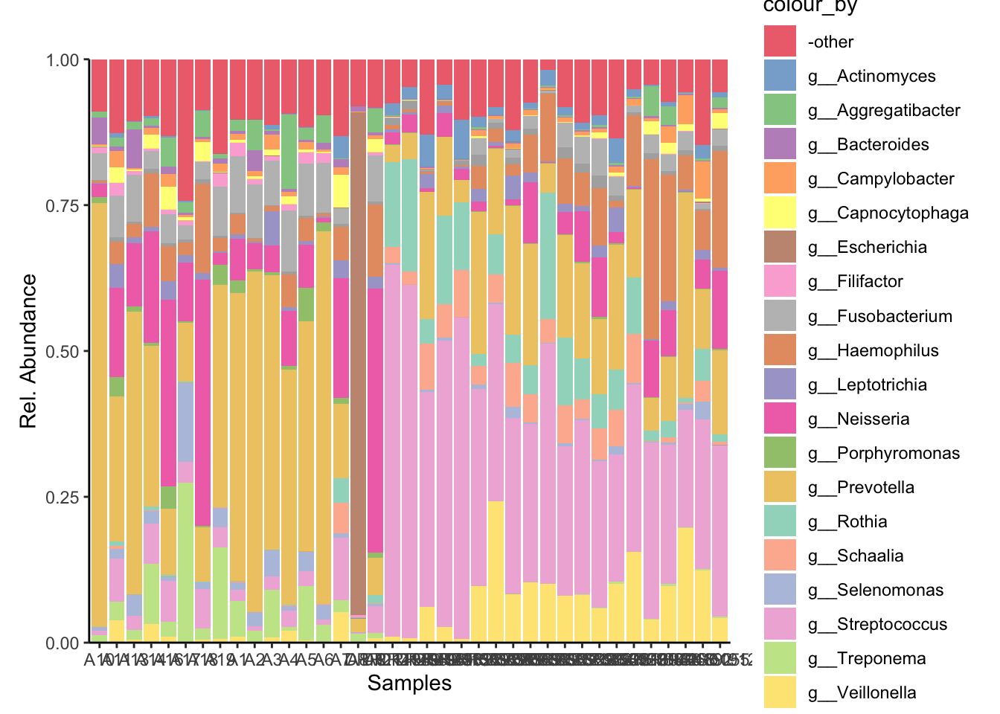
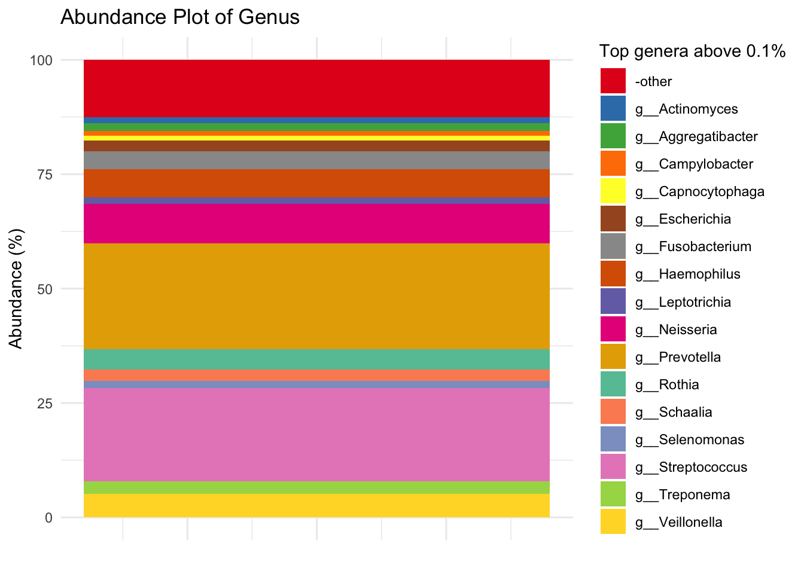
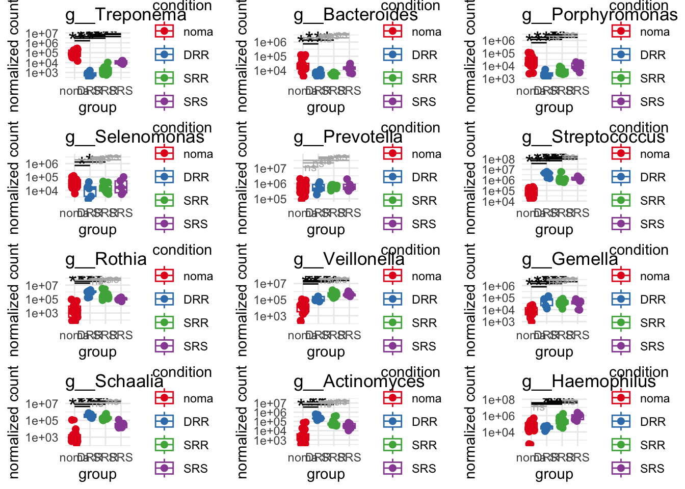
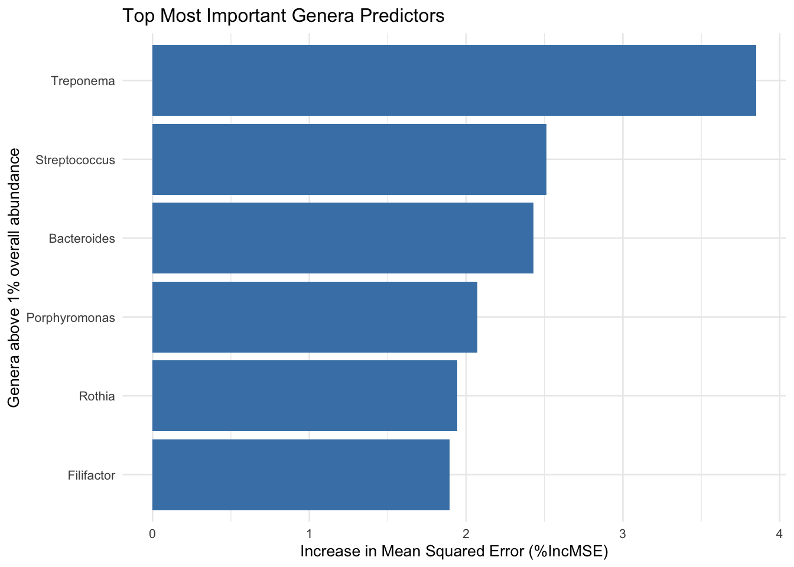
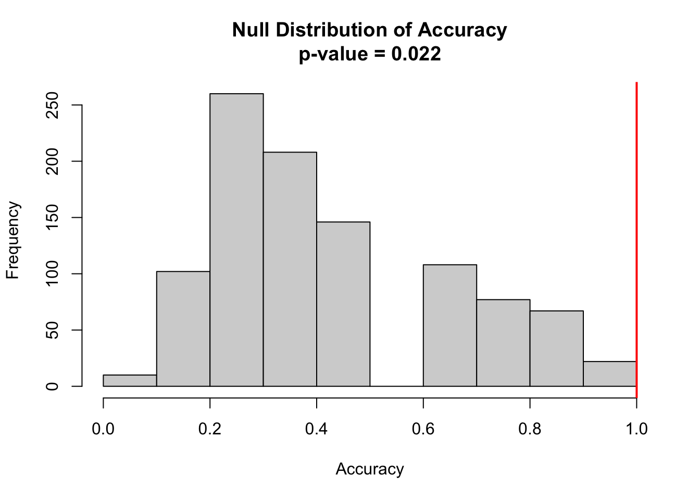
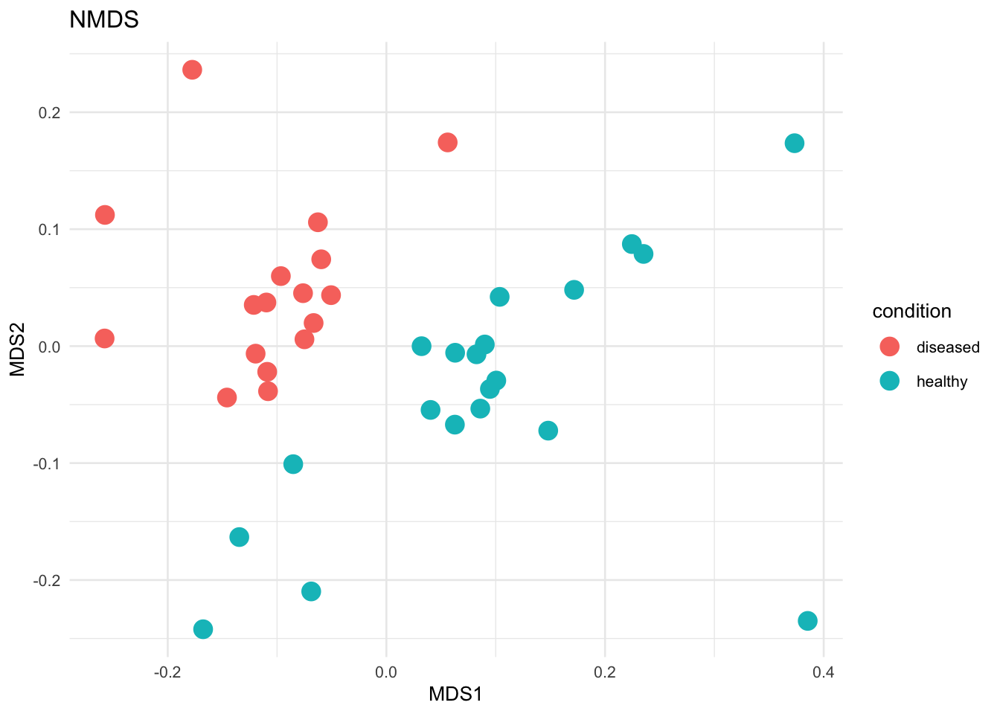

# Make sure these are all installed as packages first
# Load necessary libraries
library(readxl)
library(pheatmap)
library(dplyr)
library(tidyr)
library(tibble)
library(RColorBrewer)
library(miaViz)
library(scater)
library(mia)
library(TreeSummarizedExperiment)
library(here)
library(readr)
library(phyloseq)
library(DESeq2)
library(ggsignif)
library(ggrepel)
library(gridExtra)
library(vegan)
library(randomForest)
library(e1071)
library(pROC)
library(ROCR)
library(caret) Noma Metagenomics: Short-read taxonomic based metagenomic analysis of noma vs healthy human saliva samples in R
This analysis was used in the short-read (Illumina) taxonomic based metagenomic analysis of noma vs healthy human saliva samples in R posted as a preprint on bioRxiv:
Shotgun metagenomic analysis of the oral microbiomes of noma patients reveals a novel disease-associated organism and potential avenues for disease prevention
Olaleye, M., O’Ferrall A.M., Goodman, R.N. et al.
1. Getting Started in R
1.1 Installing and Loading Packages
Install all necessary packages into R.
2. Import and Clean Data
We will be importing MetaPhlan style Bracken data
First we’ll write a function to import MetaPhlan style bracken data
2.1 Load taxonomic data
file_path = "../data/noma_HMP_saliva_bracken_MetaPhlan_style_report_bacteria_noma_v_healthy_saliva_A1_A19_corrGB.txt"
sample_data_path = "../data/Samples_healthy_v_noma_saliva_A1_A19_corrGB.csv"
# Import data
tse_metaphlan_noma = loadFromMetaphlan(file_path)
# Defining the TSE for the rest of the script
tse_metaphlan = tse_metaphlan_noma2.2 Add metadata
patient_metadata = read_excel("../data/micro_study_metadata.xlsx")
sample_to_patient = read_excel("../data/sample_to_patient_A1_A40.xlsx")
metadata = dplyr::inner_join(patient_metadata, sample_to_patient, by = "respondent_id")
metadata_2 = metadata %>% filter(sample_name %in% colnames(tse_metaphlan_noma))
coldata = data.frame(sample_name = colnames(tse_metaphlan_noma))
metadata_3 = dplyr::left_join(coldata, metadata_2, by = "sample_name")
# Create a DataFrame with this information
metadata_df = DataFrame(metadata_3)
rownames(metadata_df) = metadata_3$sample_name
t_metadata_df = t(metadata_df)
ncol(t_metadata_df)[1] 37# Add this DataFrame as colData to your TreeSummarizedExperiment object
colData(tse_metaphlan_noma) = metadata_df
tse_metaphlan = tse_metaphlan_noma2.3 Adding diseased or healthy condition metadata
# Assume your TreeSummarizedExperiment object is called `tse`
# Get the current sample names (column names)
sample_names <- colnames(tse_metaphlan)
sample_names [1] "A10" "A11" "A13" "A14" "A16"
[6] "A17" "A18" "A19" "A1" "A2"
[11] "A3" "A4" "A5" "A6" "A7"
[16] "A8" "A9" "DRR214959" "DRR214960" "DRR214961"
[21] "DRR214962" "DRR241310" "SRR5892208" "SRR5892209" "SRR5892210"
[26] "SRR5892211" "SRR5892212" "SRR5892213" "SRR5892214" "SRR5892215"
[31] "SRR5892216" "SRR5892217" "SRS013942" "SRS014468" "SRS014692"
[36] "SRS015055" "SRS019120" # Create a vector indicating the condition (diseased or healthy)
# sample_1 to sample_17 are diseased, and sample_18 to sample_37 are healthy
condition <- c(rep("diseased", 17), rep("healthy", 20))
# Create a DataFrame with this information
sample_metadata_disease <- DataFrame(condition = condition)
rownames(sample_metadata_disease) = sample_names
sample_metadata_diseaseDataFrame with 37 rows and 1 column
condition
<character>
A10 diseased
A11 diseased
A13 diseased
A14 diseased
A16 diseased
... ...
SRS013942 healthy
SRS014468 healthy
SRS014692 healthy
SRS015055 healthy
SRS019120 healthy# Add this DataFrame as colData to your TreeSummarizedExperiment object
colData(tse_metaphlan) <- sample_metadata_disease
# Check that colData was added successfully
head(as.data.frame(colData(tse_metaphlan)), n = 37) condition
A10 diseased
A11 diseased
A13 diseased
A14 diseased
A16 diseased
A17 diseased
A18 diseased
A19 diseased
A1 diseased
A2 diseased
A3 diseased
A4 diseased
A5 diseased
A6 diseased
A7 diseased
A8 diseased
A9 diseased
DRR214959 healthy
DRR214960 healthy
DRR214961 healthy
DRR214962 healthy
DRR241310 healthy
SRR5892208 healthy
SRR5892209 healthy
SRR5892210 healthy
SRR5892211 healthy
SRR5892212 healthy
SRR5892213 healthy
SRR5892214 healthy
SRR5892215 healthy
SRR5892216 healthy
SRR5892217 healthy
SRS013942 healthy
SRS014468 healthy
SRS014692 healthy
SRS015055 healthy
SRS019120 healthy2.4 Inspecting the Data
You can inspect the data with these functions.
The output is not printed here as it would be too large.
(count <- assays(tse_metaphlan)[[1]])
head(rowData(tse_metaphlan))
head(colData(tse_metaphlan))
head(metadata(tse_metaphlan))2.5 Converting TSE to other common data formats e.g. Phyloseq
phyloseq_metaphlan = makePhyloseqFromTreeSE(tse_metaphlan)
phyloseq_obj = makePhyloseqFromTreeSE(tse_metaphlan)3. Non-parametric statistical tests
Non-parametric methods were used to determine the difference between samples based on the categorical variable of disease status. Non-parametric tests are used for metagenomic data due to the non-normal distribution of the data. We used the Bray-Curtis dissimilarity matrix for all these tests.
3.1 Preparing the data
# See above "Converting TSE to other common data formats e.g. Phyloseq"
# Use makePhyloseqFromTreeSE from Miaverse
tse_metaphlan_noma = tse_metaphlan
# make an assay for abundance
tse_metaphlan_noma <- transformAssay(tse_metaphlan_noma, assay.type="counts", method="relabundance")
taxonomyRanks(tse_metaphlan_noma)[1] "Kingdom" "Phylum" "Class" "Order" "Family" "Genus" "Species"colData(tse_metaphlan_noma)DataFrame with 37 rows and 1 column
condition
<character>
A10 diseased
A11 diseased
A13 diseased
A14 diseased
A16 diseased
... ...
SRS013942 healthy
SRS014468 healthy
SRS014692 healthy
SRS015055 healthy
SRS019120 healthy# make an altExp and matrix for order
tse_metaphlan_noma_genus = altExp(tse_metaphlan_noma, "Genus")
# Add metadata to colData
colData(tse_metaphlan_noma_genus)DataFrame with 37 rows and 0 columnscolData(tse_metaphlan_noma_genus) <- sample_metadata_disease
metadata_df = colData(tse_metaphlan_noma_genus)
metadata_noma_genus = as.data.frame(colData(tse_metaphlan_noma_genus))
metadata_noma_genus condition
A10 diseased
A11 diseased
A13 diseased
A14 diseased
A16 diseased
A17 diseased
A18 diseased
A19 diseased
A1 diseased
A2 diseased
A3 diseased
A4 diseased
A5 diseased
A6 diseased
A7 diseased
A8 diseased
A9 diseased
DRR214959 healthy
DRR214960 healthy
DRR214961 healthy
DRR214962 healthy
DRR241310 healthy
SRR5892208 healthy
SRR5892209 healthy
SRR5892210 healthy
SRR5892211 healthy
SRR5892212 healthy
SRR5892213 healthy
SRR5892214 healthy
SRR5892215 healthy
SRR5892216 healthy
SRR5892217 healthy
SRS013942 healthy
SRS014468 healthy
SRS014692 healthy
SRS015055 healthy
SRS019120 healthy# genus
phyloseq_noma = makePhyloseqFromTreeSE(tse_metaphlan_noma_genus)
phyloseq_noma_esd = transform_sample_counts(phyloseq_noma, function(x) 1E6 * x/sum(x))
ntaxa(phyloseq_noma_esd) [1] 1757nsamples(phyloseq_noma_esd) [1] 373.1 Permanova across entire dataset
set.seed(123456)
# Calculate bray curtis distance matrix on main variables
noma.bray = phyloseq::distance(phyloseq_noma_esd, method = "bray")
sample.noma.df <- data.frame(sample_data(phyloseq_noma_esd))
permanova_all = vegan::adonis2(noma.bray ~ condition , data = sample.noma.df)
permanova_allPermutation test for adonis under reduced model
Permutation: free
Number of permutations: 999
vegan::adonis2(formula = noma.bray ~ condition, data = sample.noma.df)
Df SumOfSqs R2 F Pr(>F)
Model 1 2.5163 0.40556 23.879 0.001 ***
Residual 35 3.6881 0.59444
Total 36 6.2044 1.00000
---
Signif. codes: 0 '***' 0.001 '**' 0.01 '*' 0.05 '.' 0.1 ' ' 1Next we will test the beta dispersion
# All together now
vegan::adonis2(noma.bray ~ condition, data = sample.noma.df)Permutation test for adonis under reduced model
Permutation: free
Number of permutations: 999
vegan::adonis2(formula = noma.bray ~ condition, data = sample.noma.df)
Df SumOfSqs R2 F Pr(>F)
Model 1 2.5163 0.40556 23.879 0.001 ***
Residual 35 3.6881 0.59444
Total 36 6.2044 1.00000
---
Signif. codes: 0 '***' 0.001 '**' 0.01 '*' 0.05 '.' 0.1 ' ' 1beta <- betadisper(noma.bray, sample.noma.df$condition)
permutest(beta)
Permutation test for homogeneity of multivariate dispersions
Permutation: free
Number of permutations: 999
Response: Distances
Df Sum Sq Mean Sq F N.Perm Pr(>F)
Groups 1 0.07827 0.078269 3.8016 999 0.056 .
Residuals 35 0.72060 0.020589
---
Signif. codes: 0 '***' 0.001 '**' 0.01 '*' 0.05 '.' 0.1 ' ' 1# we don't want this to be significant 3.2 Anosim across entire dataset
condition_group = get_variable(phyloseq_noma_esd, "condition")
set.seed (123456)
anosim(distance(phyloseq_noma_esd, "bray"), condition_group)
Call:
anosim(x = distance(phyloseq_noma_esd, "bray"), grouping = condition_group)
Dissimilarity: bray
ANOSIM statistic R: 0.734
Significance: 0.001
Permutation: free
Number of permutations: 999condition_ano = anosim(distance(phyloseq_noma_esd, "bray"), condition_group)
condition_ano
Call:
anosim(x = distance(phyloseq_noma_esd, "bray"), grouping = condition_group)
Dissimilarity: bray
ANOSIM statistic R: 0.734
Significance: 0.001
Permutation: free
Number of permutations: 9993.3 MRPP across entire dataset
#condition
noma.bray <- phyloseq::distance(phyloseq_noma_esd, method = "bray") # Calculate bray curtis distance matrix
condition_group = get_variable(phyloseq_noma_esd, "condition") # Make condition Grouping
# Run MRPP
set.seed(123456)
vegan::mrpp(noma.bray, condition_group, permutations = 999,
weight.type = 1, strata = NULL, parallel = getOption("mc.cores"))
Call:
vegan::mrpp(dat = noma.bray, grouping = condition_group, permutations = 999, weight.type = 1, strata = NULL, parallel = getOption("mc.cores"))
Dissimilarity index: bray
Weights for groups: n
Class means and counts:
diseased healthy
delta 0.4931 0.3533
n 17 20
Chance corrected within-group agreement A: 0.2364
Based on observed delta 0.4176 and expected delta 0.5468
Significance of delta: 0.001
Permutation: free
Number of permutations: 9993.4 Outputting non paramteric tests into table
# Define the list of metadata variables you want to test
variables_to_test <- c("condition")
# Set a seed for reproducibility of permutation-based tests
set.seed(123456)
bray_dist <- phyloseq::distance(phyloseq_noma_esd, method = "bray")
# Extract the sample data into a data frame for use with adonis2
sample_df <- data.frame(sample_data(phyloseq_noma_esd))
# Create an empty list to store the results from each iteration
results_list <- list()
# Loop through each variable name in the 'variables_to_test' vector
for (variable in variables_to_test) {
message(paste("Running tests for variable:", variable))
# PERMANOVA (adonis2)
# Create the statistical formula dynamically for the current variable
formula <- as.formula(paste("bray_dist ~", variable))
# Run the PERMANOVA test using the adonis2 function
permanova_res <- vegan::adonis2(formula, data = sample_df, permutations = 999)
# Extract the p-value from the results. It's in the 'Pr(>F)' column.
p_permanova <- permanova_res$`Pr(>F)`[1]
# ANOSIM
# Get the grouping factor (the actual variable data) from the phyloseq object
grouping_factor <- phyloseq::get_variable(phyloseq_noma_esd, variable)
# Run the ANOSIM test
anosim_res <- vegan::anosim(bray_dist, grouping_factor, permutations = 999)
# Extract the p-value (significance) from the ANOSIM result
p_anosim <- anosim_res$signif
# MRPP
# The grouping factor is the same as for ANOSIM
# Run the MRPP test
mrpp_res <- vegan::mrpp(bray_dist, grouping_factor, permutations = 999)
# Extract the p-value from the MRPP result
p_mrpp <- mrpp_res$Pvalue
# Store Results
# Store the p-values for the current variable in our results list.
# We create a small data frame for this iteration's results.
results_list[[variable]] <- data.frame(
Variable = paste0(variable, "."),
`permanova.` = p_permanova,
`anosim.` = p_anosim,
`mrpp.` = p_mrpp,
# 'check.names = FALSE' prevents R from changing our column names
check.names = FALSE
)
}Running tests for variable: condition# Combine the list of individual data frames into one final table
final_results_table <- do.call(rbind, results_list)
# Clean up the row names of the final table
rownames(final_results_table) <- NULL
# Print the final, consolidated table to the console
print(final_results_table) Variable permanova. anosim. mrpp.
1 condition. 0.001 0.001 0.001write.csv(final_results_table, file ="../tbls/Table_1A.csv")3.5 Permanova function for specific taxa
# create a
tse_metaphlan_genus = altExp(tse_metaphlan, "Genus")
# Extract the counts and taxonomic table
counts <- assay(tse_metaphlan_genus, "counts")
tax_table <- rowData(tse_metaphlan_genus)$Genus # Replace "Genus" with your taxonomic level of interest
sample_data <- colData(tse_metaphlan_genus)
groups = as.data.frame(sample_data)
# Aggregate counts by Genus
aggregated_counts <- rowsum(counts, tax_table)
# Create a new aggregated TreeSummarizedExperiment object
tse_aggregated <- TreeSummarizedExperiment(assays = list(counts = aggregated_counts),
colData = sample_data)
# Calculate relative abundances
relative_abundances <- sweep(assay(tse_aggregated, "counts"), 2, colSums(assay(tse_aggregated, "counts")), FUN = "/") * 100
# Convert to a data frame and group by Treatment
relative_df <- as.data.frame(t(relative_abundances))
set.seed (123456)
# Define the vector of genera names (without the "g__" prefix)
genera <- c("Prevotella", "Treponema", "Neisseria", "Bacteroides",
"Filifactor", "Porphyromonas", "Fusobacterium", "Escherichia",
"Selenomonas", "Aggregatibacter", "Capnocytophaga")
# Initialize an empty data frame to store the results
permanova_taxa_results <- data.frame(Genus = character(), pvalue = numeric(), stringsAsFactors = FALSE)
# Loop over each genus
for (genus in genera) {
set.seed (123456)
# Subset the data for the genus; adjust column selection as needed
subset_data <- relative_df %>% select(paste0("g__", genus))
# Calculate the Bray-Curtis distance
bray_dist <- vegdist(subset_data, method = "bray")
# Run PERMANOVA using adonis2
adonis_result <- adonis2(bray_dist ~ condition, data = groups)
# Extract the p-value for the sample_type factor (usually in the first row)
pval <- adonis_result$`Pr(>F)`[1]
# Append the result to the results data frame
permanova_taxa_results <- rbind(permanova_taxa_results, data.frame(Genus = genus, pvalue = pval))
}
print(permanova_taxa_results) Genus pvalue
1 Prevotella 0.014
2 Treponema 0.001
3 Neisseria 0.035
4 Bacteroides 0.001
5 Filifactor 0.001
6 Porphyromonas 0.001
7 Fusobacterium 0.002
8 Escherichia 0.002
9 Selenomonas 0.003
10 Aggregatibacter 0.002
11 Capnocytophaga 0.0164. Relative Abundance
The top 20 most abundant genera were selected from across the entire dataset and visualised with the plotAbundance function of miaViz.
4.1 Plotting relative abundance of genera across samples
# Check taxonomy ranks
taxonomyRanks(tse_metaphlan)[1] "Kingdom" "Phylum" "Class" "Order" "Family" "Genus" "Species" # make an assay for abundance
tse_metaphlan <- transformAssay(tse_metaphlan, assay.type="counts", method="relabundance")
# make an altExp and matrix for Genus
altExp(tse_metaphlan,"Genus") <- agglomerateByRank(tse_metaphlan,"Genus")
# make a dataframe of relative abundance
relabundance_df_Genus <- as.data.frame(assay(altExp(tse_metaphlan, "Genus"), "relabundance"))
# make a matric of relative abundance
relabundance_matrix_Genus <- assay(altExp(tse_metaphlan, "Genus"), "relabundance")
# calculate the total relative abundance of each Genus (row sums)
total_relabundance_Genus <- rowSums(relabundance_matrix_Genus)
# Identify the top 20 top Genuss
top_Genus <- names(sort(total_relabundance_Genus, decreasing = TRUE)[1:20])
# Delete everything from start to Genus
top_Genus = sub(".*_g__","",top_Genus)
# Add Genus back in
top_Genus = paste0(paste(rep("g__", length(top_Genus)), top_Genus))
# Delete the space introduced by this
top_Genus = sub(" ","",top_Genus)
top_Genus [1] "g__Prevotella" "g__Streptococcus" "g__Neisseria"
[4] "g__Haemophilus" "g__Veillonella" "g__Rothia"
[7] "g__Fusobacterium" "g__Treponema" "g__Schaalia"
[10] "g__Escherichia" "g__Aggregatibacter" "g__Selenomonas"
[13] "g__Leptotrichia" "g__Actinomyces" "g__Campylobacter"
[16] "g__Capnocytophaga" "g__Porphyromonas" "g__Bacteroides"
[19] "g__Gemella" "g__Filifactor" # make a new tse_metaphlan where the top 14 Genuss are recognised, while others are "other"
tse_metaphlan_top_20_Genus <- tse_metaphlan
rowData(tse_metaphlan_top_20_Genus)$Genus <- ifelse(rowData(tse_metaphlan_top_20_Genus)$Genus %in% top_Genus, rowData(tse_metaphlan_top_20_Genus)$Genus, "-other")
genus_colors <- c(
"-other" = "#E41A1C",
"g__Actinomyces" = "#377EB8",
"g__Aggregatibacter" = "#4DAF4A",
"g__Bacteroides" = "#984EA3",
"g__Campylobacter" = "#FF7F00",
"g__Capnocytophaga" = "#FFFF33",
"g__Dialister" = "#E7298A",
"g__Escherichia" = "#A65628",
"g__Filifactor" = "#F781BF",
"g__Fusobacterium" = "#999999",
"g_Gemella" = "#1B9E77",
"g__Haemophilus" = "#D95F02",
"g__Leptotrichia" = "#7570B3",
"g__Neisseria" = "#E7298A",
"g__Porphyromonas" = "#66A61E",
"g__Prevotella" = "#E6AB02",
"g__Rothia" = "#66C2A5",
"g__Schaalia" = "#FC8D62",
"g__Selenomonas" = "#8DA0CB",
"g__Streptococcus" = "#E78AC3",
"g__Tannerella" = "#E41A1C",
"g__Treponema" = "#A6D854",
"g__Veillonella" = "#FFD92F"
)
Genus_plot <- plotAbundance(tse_metaphlan_top_20_Genus,
assay.type = "relabundance",
rank = "Genus",
add_x_text = TRUE) +
theme(plot.margin = ggplot2::margin(t = 30, r = 10, b = 10, l = 10))
Genus_plot_cols = Genus_plot + scale_fill_manual(values=genus_colors)Scale for fill is already present.
Adding another scale for fill, which will replace the existing scale. Genus_plot_cols
ggsave("../imgs/Figure_1B.png", plot = Genus_plot_cols, width = 28, height = 16, dpi = 400)4.2 Creating a table of average relative abundance
# Get numbers in table
# Total
top_Genus_numbers_basic = sort(total_relabundance_Genus, decreasing = TRUE)
top_Genus_numbers_df = as.data.frame(top_Genus_numbers_basic)
top_Genus_numbers = as.tibble(top_Genus_numbers_df)Warning: `as.tibble()` was deprecated in tibble 2.0.0.
ℹ Please use `as_tibble()` instead.
ℹ The signature and semantics have changed, see `?as_tibble`. rownames(top_Genus_numbers_df) <- gsub(".*(g__*)", "\\1", rownames(top_Genus_numbers_df))
top_Genus_pc = top_Genus_numbers %>%
mutate(top_Genus_percentage = (top_Genus_numbers_basic/sum(top_Genus_numbers$top_Genus_numbers_basic)) * 100) %>%
mutate(top_Genus = rownames(top_Genus_numbers_df))
sum(top_Genus_pc$top_Genus_percentage)[1] 100top_Genus_pc$top_20_Genus = ifelse(top_Genus_pc$top_Genus %in% top_Genus, top_Genus_pc$top_Genus, "-other")
top_Genus_pc$top_Genus_above_1 = ifelse(top_Genus_pc$top_Genus_percentage > 1, top_Genus_pc$top_Genus, "-other")
top_Genus_above_1 = unique(top_Genus_pc$top_Genus_above_1)
top_Genus_pc$top_Genus_above_0.1 = ifelse(top_Genus_pc$top_Genus_percentage > 0.1, top_Genus_pc$top_Genus, "-other")
top_Genus_above_0.1 = unique(top_Genus_pc$top_Genus_above_0.1)
mat_colors <- c(brewer.pal(8, "Dark2"), brewer.pal(8, "Set1"), brewer.pal(8, "Set2"))
# Create the abundance plot with a single stacked bar for 1%
p = ggplot(top_Genus_pc, aes(x = 1, y = top_Genus_percentage, fill = top_Genus_above_1)) +
geom_bar(stat = "identity") +
labs(x = "", y = "Abundance (%)", title = "Abundance Plot of Genus") +
theme_minimal() +
scale_fill_manual(values = genus_colors, name = "Top genera above 0.1%") +
theme(axis.text.x = element_blank(), axis.ticks.x = element_blank())
p
ggsave("../imgs/Supplementary_Figure_4.png", plot = p, width = 28, height = 16, dpi = 400)4.3 Statistical differences in relative abundance of top 20 genera
plot_relab_boxplot = function(genus = relative_df$g__Prevotella,
sample_data = sample_data,
title = "Prevotella",
...) {
rel_df = data.frame (
genus = genus,
condition = sample_data
)
# Create the boxplot with significance
p = ggplot(rel_df, aes(x = condition, y = genus, fill = condition)) +
geom_boxplot() +
geom_signif(comparisons = list(c("healthy", "diseased")),
map_signif_level = FALSE,
test = wilcox.test) +
labs(title = title,
x = "condition",
y = "Relative Abundance") +
theme_minimal() +
scale_fill_manual(values = c("healthy" = "#4682B4", "diseased" = "#E41A1C")) +
theme(legend.position = "none")
print(p)
}
Actinomyces_rel_bp = plot_relab_boxplot(genus = relative_df$g__Actinomyces,
sample_data = sample_data,
title = "Actinomyces") Aggregatibacter_rel_bp = plot_relab_boxplot(genus = relative_df$g__Aggregatibacter,
sample_data = sample_data,
title = "Aggregatibacter") Bacteroides_rel_bp = plot_relab_boxplot(genus = relative_df$g__Bacteroides,
sample_data = sample_data,
title = "Bacteroides") Campylobacter_rel_bp = plot_relab_boxplot(genus = relative_df$g__Campylobacter,
sample_data = sample_data,
title = "Campylobacter") Capnocytophaga_rel_bp = plot_relab_boxplot(genus = relative_df$g__Capnocytophaga,
sample_data = sample_data,
title = "Capnocytophaga") Dialister_rel_bp = plot_relab_boxplot(genus = relative_df$g__Dialister,
sample_data = sample_data,
title = "Dialister") Escherichia_rel_bp = plot_relab_boxplot(genus = relative_df$g__Escherichia,
sample_data = sample_data,
title = "Escherichia") Filifactor_rel_bp = plot_relab_boxplot(genus = relative_df$g__Filifactor,
sample_data = sample_data,
title = "Filifactor") Fusobacterium_rel_bp = plot_relab_boxplot(genus = relative_df$g__Fusobacterium,
sample_data = sample_data,
title = " Fusobacterium") Gemella_rel_bp = plot_relab_boxplot(genus = relative_df$g__Gemella,
sample_data = sample_data,
title = "Gemella") Haemophilus_rel_bp = plot_relab_boxplot(genus = relative_df$g__Haemophilus,
sample_data = sample_data,
title = "Haemophilus") Leptotrichia_rel_bp = plot_relab_boxplot(genus = relative_df$g__Leptotrichia,
sample_data = sample_data,
title = "Leptotrichia") Neisseria_rel_bp = plot_relab_boxplot(genus = relative_df$g__Neisseria,
sample_data = sample_data,
title = "Neisseria") Porphyromonas_rel_bp = plot_relab_boxplot(genus = relative_df$g__Porphyromonas,
sample_data = sample_data,
title = "Porphyromonas") Prevotella_rel_bp = plot_relab_boxplot(genus = relative_df$g__Prevotella,
sample_data = sample_data,
title = "Prevotella") Rothia_rel_bp = plot_relab_boxplot(genus = relative_df$g__Rothia,
sample_data = sample_data,
title = "Rothia") Schaalia_rel_bp = plot_relab_boxplot(genus = relative_df$g__Schaalia,
sample_data = sample_data,
title = "Schaalia") Selenomonas_rel_bp = plot_relab_boxplot(genus = relative_df$g__Selenomonas,
sample_data = sample_data,
title = "Selenomonas") Streptococcus_rel_bp = plot_relab_boxplot(genus = relative_df$g__Streptococcus,
sample_data = sample_data,
title = "Streptococcus") Tannerella_rel_bp = plot_relab_boxplot(genus = relative_df$g__Tannerella,
sample_data = sample_data,
title = "Tannerella") Treponema_rel_bp = plot_relab_boxplot(genus = relative_df$g__Treponema,
sample_data = sample_data,
title = "Treponema") Veillonella_rel_bp = plot_relab_boxplot(genus = relative_df$g__Veillonella,
sample_data = sample_data,
title = "Veillonella") grid.arrange(Actinomyces_rel_bp, Gemella_rel_bp, Rothia_rel_bp, Schaalia_rel_bp, Streptococcus_rel_bp, Veillonella_rel_bp,
Aggregatibacter_rel_bp,Bacteroides_rel_bp, Capnocytophaga_rel_bp, Dialister_rel_bp, Escherichia_rel_bp, Filifactor_rel_bp,
Neisseria_rel_bp, Porphyromonas_rel_bp, Prevotella_rel_bp, Selenomonas_rel_bp, Tannerella_rel_bp, Treponema_rel_bp,
ncol=6, top = "Relative Abundance")
ggsave("../imgs/Supplementary_Figure_3.png",
arrangeGrob(Actinomyces_rel_bp, Gemella_rel_bp, Rothia_rel_bp, Schaalia_rel_bp, Streptococcus_rel_bp,
Veillonella_rel_bp,
Aggregatibacter_rel_bp,Bacteroides_rel_bp, Capnocytophaga_rel_bp, Dialister_rel_bp, Escherichia_rel_bp, Filifactor_rel_bp,
Neisseria_rel_bp, Porphyromonas_rel_bp, Prevotella_rel_bp, Selenomonas_rel_bp, Tannerella_rel_bp, Treponema_rel_bp,
ncol=6),
width = 20,
height = 10)5. Differential Analysis with Deseq
Differential analysis used the DESeq2 model on normalised count data and determined fold-change and significant differences between noma and healthy samples at the genera level.
5.1 Preparing the data
Use makePhyloseqFromTreeSE from Miaverse to convert
# Assume your TreeSummarizedExperiment object is called `tse`
# Get the current sample names (column names)
tse_metaphlan_genus = altExp(tse_metaphlan, "Genus")
sample_names_genus <- colnames(tse_metaphlan_genus)
sample_names_genus [1] "A10" "A11" "A13" "A14" "A16"
[6] "A17" "A18" "A19" "A1" "A2"
[11] "A3" "A4" "A5" "A6" "A7"
[16] "A8" "A9" "DRR214959" "DRR214960" "DRR214961"
[21] "DRR214962" "DRR241310" "SRR5892208" "SRR5892209" "SRR5892210"
[26] "SRR5892211" "SRR5892212" "SRR5892213" "SRR5892214" "SRR5892215"
[31] "SRR5892216" "SRR5892217" "SRS013942" "SRS014468" "SRS014692"
[36] "SRS015055" "SRS019120" # Create a vector indicating the condition (diseased or healthy)
# Assuming sample_1 to sample_19 are diseased, and sample_20 to sample_22 are healthy
condition <- c(rep("diseased", 17), rep("healthy", 20))
# Create a DataFrame with this information
sample_metadata_disease <- DataFrame(condition = condition)
rownames(sample_metadata_disease) = sample_names
sample_metadata_diseaseDataFrame with 37 rows and 1 column
condition
<character>
A10 diseased
A11 diseased
A13 diseased
A14 diseased
A16 diseased
... ...
SRS013942 healthy
SRS014468 healthy
SRS014692 healthy
SRS015055 healthy
SRS019120 healthyhead(as.data.frame(sample_metadata_disease), n = 37) condition
A10 diseased
A11 diseased
A13 diseased
A14 diseased
A16 diseased
A17 diseased
A18 diseased
A19 diseased
A1 diseased
A2 diseased
A3 diseased
A4 diseased
A5 diseased
A6 diseased
A7 diseased
A8 diseased
A9 diseased
DRR214959 healthy
DRR214960 healthy
DRR214961 healthy
DRR214962 healthy
DRR241310 healthy
SRR5892208 healthy
SRR5892209 healthy
SRR5892210 healthy
SRR5892211 healthy
SRR5892212 healthy
SRR5892213 healthy
SRR5892214 healthy
SRR5892215 healthy
SRR5892216 healthy
SRR5892217 healthy
SRS013942 healthy
SRS014468 healthy
SRS014692 healthy
SRS015055 healthy
SRS019120 healthy# Add this DataFrame as colData to your TreeSummarizedExperiment object
colData(tse_metaphlan_genus) <- sample_metadata_disease
# Check that colData was added successfully
colData(tse_metaphlan_genus)DataFrame with 37 rows and 1 column
condition
<character>
A10 diseased
A11 diseased
A13 diseased
A14 diseased
A16 diseased
... ...
SRS013942 healthy
SRS014468 healthy
SRS014692 healthy
SRS015055 healthy
SRS019120 healthy# Use makePhyloseqFromTreeSE from Miaverse
phyloseq_metaphlan_genus = makePhyloseqFromTreeSE(tse_metaphlan_genus)
deseq2_metaphlan_genus = phyloseq_to_deseq2(phyloseq_metaphlan_genus, design = ~condition)Warning in DESeqDataSet(se, design = design, ignoreRank): some variables in
design formula are characters, converting to factors5.2 Running differential analysis on diseased vs healthy
dds_genus = deseq2_metaphlan_genus
design(dds_genus) <- ~ condition # Replace with your column name for condition
# Run DESeq2 analysis
dds_genus <- DESeq(dds_genus)5.3 Extracting results for disease state
# Extract results for diseased vs healthy
res_genus <- results(dds_genus, contrast = c("condition", "diseased", "healthy"))
string <- "NA_p__Actinobacteria_c__Actinobacteria_o__Streptomycetales_f__Streptomycetaceae_g__Streptomyces"
string_result <- gsub(".*(g__Streptomyces)", "\\1", string)
print(string_result)[1] "g__Streptomyces"# Clean up genus names for dds
rownames(dds_genus) <- gsub(".*(g__*)", "\\1", rownames(dds_genus))
# Clean up genus names for res
res_genus@rownames <- gsub(".*(g__*)", "\\1", res_genus@rownames)5.4 Plotting output as volcano plot
deseq_volcano_g = ggplot(as.data.frame(res_genus),
aes(x = log2FoldChange,
y = -log10(pvalue),
color = ifelse(-log10(pvalue) > 1.3, log2FoldChange > 0, "grey"),
label = ifelse(-log10(pvalue) > 1.3, as.character(rownames(as.data.frame(res_genus))), ''))) +
geom_point() +
geom_hline(yintercept = 1.3) +
scale_color_manual(name = "Log2 fold change",
values = c("TRUE" = "#E47273", "FALSE" = "#6DA6CE", "grey" = "grey")) +
theme_minimal() +
labs(title = "Differential Abundance Analysis",
x = "Log2 Fold Change",
y = "-Log10 P-Value") +
geom_label_repel()
deseq_volcano_g Warning: ggrepel: 723 unlabeled data points (too many overlaps). Consider
increasing max.overlapsggsave("../imgs/Figure_2A.png", plot = deseq_volcano_g, width = 28, height = 16, dpi = 400)Warning: ggrepel: 648 unlabeled data points (too many overlaps). Consider
increasing max.overlaps5.5 Inspecting Genera that are significantly different between disease states
# Sort summary list by p-value
res_ordered_genus <- res_genus[order(res_genus$padj),]
head(res_ordered_genus)log2 fold change (MLE): condition diseased vs healthy
Wald test p-value: condition diseased vs healthy
DataFrame with 6 rows and 6 columns
baseMean log2FoldChange lfcSE stat pvalue
<numeric> <numeric> <numeric> <numeric> <numeric>
g__Streptococcus 1.20291e+06 -4.55825 0.372011 -12.2530 1.61898e-34
g__Wolinella 8.26901e+01 4.31475 0.366735 11.7653 5.89076e-32
g__Atopobium 1.71802e+04 -5.01526 0.443219 -11.3155 1.09918e-29
g__Mesorhizobium 1.10485e+03 3.43460 0.323326 10.6227 2.33594e-26
g__Mogibacterium 1.99595e+04 -3.38475 0.319175 -10.6047 2.83487e-26
g__Treponema 5.17980e+04 4.65427 0.445544 10.4463 1.52395e-25
padj
<numeric>
g__Streptococcus 2.63084e-31
g__Wolinella 4.78624e-29
g__Atopobium 5.95388e-27
g__Mesorhizobium 9.21334e-24
g__Mogibacterium 9.21334e-24
g__Treponema 4.12737e-23head(res_ordered_genus, n =20)log2 fold change (MLE): condition diseased vs healthy
Wald test p-value: condition diseased vs healthy
DataFrame with 20 rows and 6 columns
baseMean log2FoldChange lfcSE stat pvalue
<numeric> <numeric> <numeric> <numeric> <numeric>
g__Streptococcus 1.20291e+06 -4.55825 0.372011 -12.2530 1.61898e-34
g__Wolinella 8.26901e+01 4.31475 0.366735 11.7653 5.89076e-32
g__Atopobium 1.71802e+04 -5.01526 0.443219 -11.3155 1.09918e-29
g__Mesorhizobium 1.10485e+03 3.43460 0.323326 10.6227 2.33594e-26
g__Mogibacterium 1.99595e+04 -3.38475 0.319175 -10.6047 2.83487e-26
... ... ... ... ... ...
g__Trueperella 369.261 -3.88747 0.446248 -8.71147 2.99966e-18
g__Brochothrix 104.056 -1.75310 0.202062 -8.67605 4.09762e-18
g__Cellulomonas 276.053 -3.45878 0.402625 -8.59058 8.65346e-18
g__Carnobacterium 965.031 -2.28987 0.267449 -8.56188 1.11039e-17
g__Helicobacter 466.085 1.54649 0.182290 8.48371 2.18116e-17
padj
<numeric>
g__Streptococcus 2.63084e-31
g__Wolinella 4.78624e-29
g__Atopobium 5.95388e-27
g__Mesorhizobium 9.21334e-24
g__Mogibacterium 9.21334e-24
... ...
g__Trueperella 3.04653e-16
g__Brochothrix 3.91684e-16
g__Cellulomonas 7.81215e-16
g__Carnobacterium 9.49675e-16
g__Helicobacter 1.77219e-15# Filter for significant species
significant_genus <- as.data.frame(res_genus) %>%
filter(padj < 0.05)
head(significant_genus) baseMean log2FoldChange lfcSE stat
g__Coprothermobacter 5.335380 1.4410253 0.5116803 2.816261
g__Caldisericum 17.227644 1.8273856 0.3686445 4.957040
g__Endomicrobium 19.087437 1.1224406 0.3217218 3.488855
g__Thermodesulfobacterium 36.973878 0.6180491 0.2182316 2.832078
g__Thermovibrio 8.442273 1.2631596 0.4095794 3.084041
g__Hydrogenobaculum 10.621548 1.5927663 0.5268100 3.023417
pvalue padj
g__Coprothermobacter 4.858615e-03 1.572759e-02
g__Caldisericum 7.157526e-07 5.512312e-06
g__Endomicrobium 4.850945e-04 2.096486e-03
g__Thermodesulfobacterium 4.624651e-03 1.518194e-02
g__Thermovibrio 2.042094e-03 7.357877e-03
g__Hydrogenobaculum 2.499376e-03 8.772108e-03# Filter for significant species with higher abundance in healthy samples
significant_genus_less_thn_zero <- as.data.frame(res_genus) %>%
filter(padj < 0.05, log2FoldChange < 0)
# Filter for significant species with higher abundance in diseased samples
significant_genus_grtr_thn_zero <- as.data.frame(res_genus) %>%
filter(padj < 0.05, log2FoldChange > 0)
# Print the results
head(significant_genus_grtr_thn_zero) baseMean log2FoldChange lfcSE stat
g__Coprothermobacter 5.335380 1.4410253 0.5116803 2.816261
g__Caldisericum 17.227644 1.8273856 0.3686445 4.957040
g__Endomicrobium 19.087437 1.1224406 0.3217218 3.488855
g__Thermodesulfobacterium 36.973878 0.6180491 0.2182316 2.832078
g__Thermovibrio 8.442273 1.2631596 0.4095794 3.084041
g__Hydrogenobaculum 10.621548 1.5927663 0.5268100 3.023417
pvalue padj
g__Coprothermobacter 4.858615e-03 1.572759e-02
g__Caldisericum 7.157526e-07 5.512312e-06
g__Endomicrobium 4.850945e-04 2.096486e-03
g__Thermodesulfobacterium 4.624651e-03 1.518194e-02
g__Thermovibrio 2.042094e-03 7.357877e-03
g__Hydrogenobaculum 2.499376e-03 8.772108e-03head(significant_genus_less_thn_zero) baseMean
NA_p__Candidatus_Saccharibacteria_NA_NA_NA_NA 9950.98811
g__Candidatus_Saccharimonas 132.50097
g__Petrotoga 22.53548
g__Luteitalea 20.57572
NA_p__Planctomycetes_c__Planctomycetia_o__Planctomycetales_NA_NA 16.78372
g__Gemmata 23.15259
log2FoldChange
NA_p__Candidatus_Saccharibacteria_NA_NA_NA_NA -3.2200083
g__Candidatus_Saccharimonas -2.7674007
g__Petrotoga -0.6724982
g__Luteitalea -0.9780208
NA_p__Planctomycetes_c__Planctomycetia_o__Planctomycetales_NA_NA -1.1875691
g__Gemmata -1.3204942
lfcSE
NA_p__Candidatus_Saccharibacteria_NA_NA_NA_NA 0.4082855
g__Candidatus_Saccharimonas 0.4198980
g__Petrotoga 0.2627007
g__Luteitalea 0.3365252
NA_p__Planctomycetes_c__Planctomycetia_o__Planctomycetales_NA_NA 0.4243233
g__Gemmata 0.3807214
stat
NA_p__Candidatus_Saccharibacteria_NA_NA_NA_NA -7.886658
g__Candidatus_Saccharimonas -6.590649
g__Petrotoga -2.559940
g__Luteitalea -2.906234
NA_p__Planctomycetes_c__Planctomycetia_o__Planctomycetales_NA_NA -2.798737
g__Gemmata -3.468401
pvalue
NA_p__Candidatus_Saccharibacteria_NA_NA_NA_NA 3.103870e-15
g__Candidatus_Saccharimonas 4.379075e-11
g__Petrotoga 1.046901e-02
g__Luteitalea 3.658079e-03
NA_p__Planctomycetes_c__Planctomycetia_o__Planctomycetales_NA_NA 5.130296e-03
g__Gemmata 5.235659e-04
padj
NA_p__Candidatus_Saccharibacteria_NA_NA_NA_NA 1.441083e-13
g__Candidatus_Saccharimonas 8.471424e-10
g__Petrotoga 3.016337e-02
g__Luteitalea 1.230720e-02
NA_p__Planctomycetes_c__Planctomycetia_o__Planctomycetales_NA_NA 1.644250e-02
g__Gemmata 2.250779e-03For noma samples
# Order the results
sig_res_genus <- significant_genus[order(significant_genus$padj),]
head(sig_res_genus) baseMean log2FoldChange lfcSE stat pvalue
g__Streptococcus 1.202906e+06 -4.558247 0.3720108 -12.25300 1.618980e-34
g__Wolinella 8.269014e+01 4.314750 0.3667349 11.76531 5.890761e-32
g__Atopobium 1.718017e+04 -5.015261 0.4432187 -11.31554 1.099178e-29
g__Mesorhizobium 1.104854e+03 3.434604 0.3233255 10.62274 2.335943e-26
g__Mogibacterium 1.995953e+04 -3.384746 0.3191753 -10.60466 2.834874e-26
g__Treponema 5.179799e+04 4.654275 0.4455440 10.44627 1.523951e-25
padj
g__Streptococcus 2.630843e-31
g__Wolinella 4.786244e-29
g__Atopobium 5.953883e-27
g__Mesorhizobium 9.213340e-24
g__Mogibacterium 9.213340e-24
g__Treponema 4.127368e-23head(sig_res_genus, n= 15) baseMean
g__Streptococcus 1.202906e+06
g__Wolinella 8.269014e+01
g__Atopobium 1.718017e+04
g__Mesorhizobium 1.104854e+03
g__Mogibacterium 1.995953e+04
g__Treponema 5.179799e+04
g__Staphylococcus 4.277333e+03
g__Filifactor 1.174252e+04
g__Cutibacterium 9.676835e+02
NA_p__Chloroflexi_c__Anaerolineae_o__Anaerolineales_f__Anaerolineaceae_NA 1.769642e+02
g__Bradyrhizobium 8.111957e+02
g__Lactococcus 2.259492e+03
g__Kurthia 1.268817e+02
g__Salinispira 6.477155e+01
g__Kingella 1.023084e+03
log2FoldChange
g__Streptococcus -4.558247
g__Wolinella 4.314750
g__Atopobium -5.015261
g__Mesorhizobium 3.434604
g__Mogibacterium -3.384746
g__Treponema 4.654275
g__Staphylococcus -2.267672
g__Filifactor 3.876533
g__Cutibacterium -3.931289
NA_p__Chloroflexi_c__Anaerolineae_o__Anaerolineales_f__Anaerolineaceae_NA 3.508700
g__Bradyrhizobium 2.395926
g__Lactococcus -3.677923
g__Kurthia -1.632900
g__Salinispira 3.530439
g__Kingella 4.225752
lfcSE
g__Streptococcus 0.3720108
g__Wolinella 0.3667349
g__Atopobium 0.4432187
g__Mesorhizobium 0.3233255
g__Mogibacterium 0.3191753
g__Treponema 0.4455440
g__Staphylococcus 0.2269665
g__Filifactor 0.3909906
g__Cutibacterium 0.4055293
NA_p__Chloroflexi_c__Anaerolineae_o__Anaerolineales_f__Anaerolineaceae_NA 0.3682544
g__Bradyrhizobium 0.2517317
g__Lactococcus 0.3882346
g__Kurthia 0.1740667
g__Salinispira 0.3804755
g__Kingella 0.4697250
stat
g__Streptococcus -12.252998
g__Wolinella 11.765313
g__Atopobium -11.315544
g__Mesorhizobium 10.622743
g__Mogibacterium -10.604662
g__Treponema 10.446274
g__Staphylococcus -9.991219
g__Filifactor 9.914646
g__Cutibacterium -9.694218
NA_p__Chloroflexi_c__Anaerolineae_o__Anaerolineales_f__Anaerolineaceae_NA 9.527923
g__Bradyrhizobium 9.517779
g__Lactococcus -9.473456
g__Kurthia -9.380891
g__Salinispira 9.279020
g__Kingella 8.996226
pvalue
g__Streptococcus 1.618980e-34
g__Wolinella 5.890761e-32
g__Atopobium 1.099178e-29
g__Mesorhizobium 2.335943e-26
g__Mogibacterium 2.834874e-26
g__Treponema 1.523951e-25
g__Staphylococcus 1.665213e-23
g__Filifactor 3.595287e-23
g__Cutibacterium 3.190735e-22
NA_p__Chloroflexi_c__Anaerolineae_o__Anaerolineales_f__Anaerolineaceae_NA 1.604608e-21
g__Bradyrhizobium 1.769193e-21
g__Lactococcus 2.707342e-21
g__Kurthia 6.541730e-21
g__Salinispira 1.710452e-20
g__Kingella 2.336101e-19
padj
g__Streptococcus 2.630843e-31
g__Wolinella 4.786244e-29
g__Atopobium 5.953883e-27
g__Mesorhizobium 9.213340e-24
g__Mogibacterium 9.213340e-24
g__Treponema 4.127368e-23
g__Staphylococcus 3.865673e-21
g__Filifactor 7.302927e-21
g__Cutibacterium 5.761050e-20
NA_p__Chloroflexi_c__Anaerolineae_o__Anaerolineales_f__Anaerolineaceae_NA 2.607487e-19
g__Bradyrhizobium 2.613581e-19
g__Lactococcus 3.666192e-19
g__Kurthia 8.177163e-19
g__Salinispira 1.985347e-18
g__Kingella 2.530776e-17# Order the results by significance greater than zero (Noma)
sig_res_genus_grtr_thn_zero <- significant_genus_grtr_thn_zero[order(significant_genus_grtr_thn_zero$padj),]
sig_res_genus_grtr_thn_zero$genus = rownames(sig_res_genus_grtr_thn_zero)
head(as.data.frame(sig_res_genus_grtr_thn_zero, n = 30)) baseMean
g__Wolinella 82.69014
g__Mesorhizobium 1104.85379
g__Treponema 51797.99394
g__Filifactor 11742.51502
NA_p__Chloroflexi_c__Anaerolineae_o__Anaerolineales_f__Anaerolineaceae_NA 176.96419
g__Bradyrhizobium 811.19569
log2FoldChange
g__Wolinella 4.314750
g__Mesorhizobium 3.434604
g__Treponema 4.654275
g__Filifactor 3.876533
NA_p__Chloroflexi_c__Anaerolineae_o__Anaerolineales_f__Anaerolineaceae_NA 3.508700
g__Bradyrhizobium 2.395926
lfcSE
g__Wolinella 0.3667349
g__Mesorhizobium 0.3233255
g__Treponema 0.4455440
g__Filifactor 0.3909906
NA_p__Chloroflexi_c__Anaerolineae_o__Anaerolineales_f__Anaerolineaceae_NA 0.3682544
g__Bradyrhizobium 0.2517317
stat
g__Wolinella 11.765313
g__Mesorhizobium 10.622743
g__Treponema 10.446274
g__Filifactor 9.914646
NA_p__Chloroflexi_c__Anaerolineae_o__Anaerolineales_f__Anaerolineaceae_NA 9.527923
g__Bradyrhizobium 9.517779
pvalue
g__Wolinella 5.890761e-32
g__Mesorhizobium 2.335943e-26
g__Treponema 1.523951e-25
g__Filifactor 3.595287e-23
NA_p__Chloroflexi_c__Anaerolineae_o__Anaerolineales_f__Anaerolineaceae_NA 1.604608e-21
g__Bradyrhizobium 1.769193e-21
padj
g__Wolinella 4.786244e-29
g__Mesorhizobium 9.213340e-24
g__Treponema 4.127368e-23
g__Filifactor 7.302927e-21
NA_p__Chloroflexi_c__Anaerolineae_o__Anaerolineales_f__Anaerolineaceae_NA 2.607487e-19
g__Bradyrhizobium 2.613581e-19
genus
g__Wolinella g__Wolinella
g__Mesorhizobium g__Mesorhizobium
g__Treponema g__Treponema
g__Filifactor g__Filifactor
NA_p__Chloroflexi_c__Anaerolineae_o__Anaerolineales_f__Anaerolineaceae_NA NA_p__Chloroflexi_c__Anaerolineae_o__Anaerolineales_f__Anaerolineaceae_NA
g__Bradyrhizobium g__Bradyrhizobiumdeseq_genus_sig_diff_noma = head(sig_res_genus_grtr_thn_zero, n = 30)
# Order the results by change greater than zero (Noma)
change_res_genus_grtr_thn_zero <- significant_genus_grtr_thn_zero[order(significant_genus_grtr_thn_zero$log2FoldChange),]
head(change_res_genus_grtr_thn_zero, n = 15) baseMean log2FoldChange lfcSE stat
g__Polynucleobacter 158.58906 0.3636115 0.1356301 2.680906
g__Geobacter 197.18389 0.4759009 0.1852261 2.569297
g__Pandoraea 112.41762 0.4765583 0.2021663 2.357259
g__Thermoanaerobacterium 199.00680 0.5044903 0.1998842 2.523913
g__Blattabacterium 91.60746 0.5085865 0.1965401 2.587698
g__Chlorobium 73.96961 0.5181272 0.1777769 2.914480
g__Salegentibacter 82.57517 0.5339047 0.2164407 2.466748
g__Thermosipho 57.03753 0.5379010 0.2015835 2.668379
g__Arcobacter 528.83484 0.5452385 0.1749888 3.115849
g__Echinicola 113.89700 0.5461497 0.1670004 3.270351
g__Brachyspira 254.89486 0.5813467 0.2025750 2.869784
g__Hungateiclostridium 251.56932 0.5858876 0.2157149 2.716027
g__Natranaerobius 20.39054 0.5919283 0.2369416 2.498203
g__Legionella 287.40179 0.6098754 0.1350509 4.515894
g__Thermodesulfobacterium 36.97388 0.6180491 0.2182316 2.832078
pvalue padj
g__Polynucleobacter 7.342307e-03 2.234316e-02
g__Geobacter 1.019050e-02 2.951793e-02
g__Pandoraea 1.841040e-02 4.896383e-02
g__Thermoanaerobacterium 1.160566e-02 3.285575e-02
g__Blattabacterium 9.661964e-03 2.813744e-02
g__Chlorobium 3.562811e-03 1.206160e-02
g__Salegentibacter 1.363462e-02 3.761675e-02
g__Thermosipho 7.621828e-03 2.308301e-02
g__Arcobacter 1.834161e-03 6.697778e-03
g__Echinicola 1.074143e-03 4.236780e-03
g__Brachyspira 4.107519e-03 1.362187e-02
g__Hungateiclostridium 6.607043e-03 2.041149e-02
g__Natranaerobius 1.248245e-02 3.485221e-02
g__Legionella 6.305023e-06 3.955854e-05
g__Thermodesulfobacterium 4.624651e-03 1.518194e-02For healthy samples
# Order the results by significance less than zero (healthy)
sig_res_genus_less_thn_zero <- significant_genus_less_thn_zero[order(significant_genus_less_thn_zero$padj),]
sig_res_genus_less_thn_zero$genus = rownames(sig_res_genus_less_thn_zero)
head(as.data.frame(sig_res_genus_less_thn_zero, n =30)) baseMean log2FoldChange lfcSE stat pvalue
g__Streptococcus 1202906.4900 -4.558247 0.3720108 -12.252998 1.618980e-34
g__Atopobium 17180.1727 -5.015261 0.4432187 -11.315544 1.099178e-29
g__Mogibacterium 19959.5262 -3.384746 0.3191753 -10.604662 2.834874e-26
g__Staphylococcus 4277.3332 -2.267672 0.2269665 -9.991219 1.665213e-23
g__Cutibacterium 967.6835 -3.931289 0.4055293 -9.694218 3.190735e-22
g__Lactococcus 2259.4921 -3.677923 0.3882346 -9.473456 2.707342e-21
padj genus
g__Streptococcus 2.630843e-31 g__Streptococcus
g__Atopobium 5.953883e-27 g__Atopobium
g__Mogibacterium 9.213340e-24 g__Mogibacterium
g__Staphylococcus 3.865673e-21 g__Staphylococcus
g__Cutibacterium 5.761050e-20 g__Cutibacterium
g__Lactococcus 3.666192e-19 g__Lactococcusdeseq_genus_sig_diff_healthy = head(sig_res_genus_less_thn_zero, n = 30)
# Order the results by change greater than zero (healthy)
change_res_genus_less_thn_zero <- significant_genus_less_thn_zero[order(significant_genus_less_thn_zero$log2FoldChange),]
head(as.data.frame(change_res_genus_less_thn_zero, n =15)) baseMean log2FoldChange lfcSE stat
g__Rothia 3.111581e+05 -5.606861 0.8099458 -6.922513
g__Atopobium 1.718017e+04 -5.015261 0.4432187 -11.315544
g__Schaalia 1.275042e+05 -4.845840 0.6891937 -7.031174
g__Kochikohdavirus 4.688045e+00 -4.830583 0.7413594 -6.515845
g__Streptococcus 1.202906e+06 -4.558247 0.3720108 -12.252998
g__Ruania 6.387048e+01 -4.088696 0.5071776 -8.061665
pvalue padj
g__Rothia 4.437010e-12 9.613521e-11
g__Atopobium 1.099178e-29 5.953883e-27
g__Schaalia 2.048035e-12 4.894202e-11
g__Kochikohdavirus 7.228141e-11 1.276710e-09
g__Streptococcus 1.618980e-34 2.630843e-31
g__Ruania 7.526211e-16 4.367890e-145.6 Look for highly abundant significant ones
taxonomyRanks(tse_metaphlan)[1] "Kingdom" "Phylum" "Class" "Order" "Family" "Genus" "Species"# make an assay for abundance
tse_metaphlan <- transformAssay(tse_metaphlan, assay.type="counts", method="relabundance")
# make an altExp and matrix for Genus
altExp(tse_metaphlan,"Genus") <- agglomerateByRank(tse_metaphlan,"Genus")
# make a dataframe of relative abundance
relabundance_df_Genus <- as.data.frame(assay(altExp(tse_metaphlan, "Genus"), "relabundance"))
# make a matric of relative abundance
relabundance_matrix_Genus <- assay(altExp(tse_metaphlan, "Genus"), "relabundance")
# calculate the total relative abundance of each Genus (row sums)
total_relabundance_Genus <- rowSums(relabundance_matrix_Genus)
# Get the top highly abundant genera based on relative abundance
top_Genus_numbers_basic = sort(total_relabundance_Genus, decreasing = TRUE)
# Make into dataframe
top_Genus_numbers_df = as.data.frame(top_Genus_numbers_basic)
# Make into tibble
top_Genus_numbers = as.tibble(top_Genus_numbers_df)
# Rename genera to remove any higher taxonomic names (a quirk of the metaphaln style)
rownames(top_Genus_numbers_df) <- gsub(".*(g__*)", "\\1", rownames(top_Genus_numbers_df))
# Get percenatge by dividing by totoal number of samples (21) and * by 100
top_Genus_pc = top_Genus_numbers %>%
mutate(top_Genus_percentage = (top_Genus_numbers_basic/21) * 100) %>%
mutate(top_Genus = rownames(top_Genus_numbers_df))
# Select only the top 20 genera by relative abundance
top_Genus_pc$top_20_Genus = ifelse(top_Genus_pc$top_Genus %in% top_Genus, top_Genus_pc$top_Genus, "-other")
# Select only the top genera with a relative abundance above 1%
top_Genus_pc$top_Genus_above_1 = ifelse(top_Genus_pc$top_Genus_percentage > 1, top_Genus_pc$top_Genus, "-other")
top_Genus_above_1 = unique(top_Genus_pc$top_Genus_above_1)
# Select
sig_res_genus_grtr_thn_zero$genera_above_1pc_relab = ifelse(sig_res_genus_grtr_thn_zero$genus %in% top_Genus_above_1, sig_res_genus_grtr_thn_zero$genus, "-other")
sig_res_genus_less_thn_zero$genera_above_1pc_relab = ifelse(sig_res_genus_less_thn_zero$genus %in% top_Genus_above_1, sig_res_genus_less_thn_zero$genus, "-other")
# Check which genera are both signifiantly different and highly abundant
unique(sig_res_genus_grtr_thn_zero$genera_above_1pc_relab)[1] "-other" "g__Treponema" "g__Porphyromonas" "g__Bacteroides"
[5] "g__Selenomonas" unique(sig_res_genus_less_thn_zero$genera_above_1pc_relab)[1] "g__Streptococcus" "-other" "g__Veillonella" "g__Gemella"
[5] "g__Schaalia" "g__Rothia" "g__Actinomyces" "g__Haemophilus" head(as.data.frame(sig_res_genus_grtr_thn_zero, n=10)) baseMean
g__Wolinella 82.69014
g__Mesorhizobium 1104.85379
g__Treponema 51797.99394
g__Filifactor 11742.51502
NA_p__Chloroflexi_c__Anaerolineae_o__Anaerolineales_f__Anaerolineaceae_NA 176.96419
g__Bradyrhizobium 811.19569
log2FoldChange
g__Wolinella 4.314750
g__Mesorhizobium 3.434604
g__Treponema 4.654275
g__Filifactor 3.876533
NA_p__Chloroflexi_c__Anaerolineae_o__Anaerolineales_f__Anaerolineaceae_NA 3.508700
g__Bradyrhizobium 2.395926
lfcSE
g__Wolinella 0.3667349
g__Mesorhizobium 0.3233255
g__Treponema 0.4455440
g__Filifactor 0.3909906
NA_p__Chloroflexi_c__Anaerolineae_o__Anaerolineales_f__Anaerolineaceae_NA 0.3682544
g__Bradyrhizobium 0.2517317
stat
g__Wolinella 11.765313
g__Mesorhizobium 10.622743
g__Treponema 10.446274
g__Filifactor 9.914646
NA_p__Chloroflexi_c__Anaerolineae_o__Anaerolineales_f__Anaerolineaceae_NA 9.527923
g__Bradyrhizobium 9.517779
pvalue
g__Wolinella 5.890761e-32
g__Mesorhizobium 2.335943e-26
g__Treponema 1.523951e-25
g__Filifactor 3.595287e-23
NA_p__Chloroflexi_c__Anaerolineae_o__Anaerolineales_f__Anaerolineaceae_NA 1.604608e-21
g__Bradyrhizobium 1.769193e-21
padj
g__Wolinella 4.786244e-29
g__Mesorhizobium 9.213340e-24
g__Treponema 4.127368e-23
g__Filifactor 7.302927e-21
NA_p__Chloroflexi_c__Anaerolineae_o__Anaerolineales_f__Anaerolineaceae_NA 2.607487e-19
g__Bradyrhizobium 2.613581e-19
genus
g__Wolinella g__Wolinella
g__Mesorhizobium g__Mesorhizobium
g__Treponema g__Treponema
g__Filifactor g__Filifactor
NA_p__Chloroflexi_c__Anaerolineae_o__Anaerolineales_f__Anaerolineaceae_NA NA_p__Chloroflexi_c__Anaerolineae_o__Anaerolineales_f__Anaerolineaceae_NA
g__Bradyrhizobium g__Bradyrhizobium
genera_above_1pc_relab
g__Wolinella -other
g__Mesorhizobium -other
g__Treponema g__Treponema
g__Filifactor -other
NA_p__Chloroflexi_c__Anaerolineae_o__Anaerolineales_f__Anaerolineaceae_NA -other
g__Bradyrhizobium -other5.7 Plotting p-values
Plotting for noma
sig_res_genus_grtr_thn_zero_above_1pc_relab = sig_res_genus_grtr_thn_zero %>% filter(genera_above_1pc_relab != "-other")
sig_res_genus_grtr_thn_zero_above_1pc_relab = sig_res_genus_grtr_thn_zero_above_1pc_relab[!grepl("NA_p__Firmicutes_c__Clostridia_o__Clostridiales_f__Lachnospiraceae_NA", sig_res_genus_grtr_thn_zero_above_1pc_relab$genus), ]
padj_plot_noma <- ggplot(sig_res_genus_grtr_thn_zero_above_1pc_relab, aes(x = reorder(genera_above_1pc_relab, `padj`), y = `padj`)) +
geom_bar(stat = "identity", fill = "#D1352B") +
geom_text(aes(label = round(`padj`, 4)),
hjust = 1.2, # Adjust horizontal position (slightly outside the bars)
vjust = 0.5, # Center vertically
size = 6, # Adjust text size
color = "black") +
coord_flip() + # Flip to make the plot horizontal
labs(
title = "Most significantly different genera above 1% abundance noma related",
x = "Genus",
y = "Adjusted p-value"
) +
theme_minimal(base_size = 10) +
theme(
plot.title = element_text(hjust = 0.5)# Center the title
)
padj_plot_noma
ggsave("../imgs/Figure_2E.png", plot = padj_plot_noma, width = 28, height = 16, dpi = 400)Plotting for healthy
# Plot for Healthy
sig_res_genus_less_thn_zero_above_1pc_relab = sig_res_genus_less_thn_zero %>% filter(genera_above_1pc_relab != "-other")
sig_res_genus_less_thn_zero_above_1pc_relab = sig_res_genus_less_thn_zero_above_1pc_relab[!grepl("NA_p__Firmicutes_c__Clostridia_o__Clostridiales_f__Clostridiales_Family_XIII._Incertae_Sedis_NA", sig_res_genus_less_thn_zero_above_1pc_relab$genus), ]
sig_res_genus_less_thn_zero_above_1pc_relab = sig_res_genus_less_thn_zero_above_1pc_relab[!grepl("NA_p__Candidatus_Saccharibacteria_NA_NA_NA_NA", sig_res_genus_less_thn_zero_above_1pc_relab$genus), ]
padj_plot_healthy <- ggplot(sig_res_genus_less_thn_zero_above_1pc_relab, aes(x = reorder(genera_above_1pc_relab, `padj`), y = `padj`)) +
geom_bar(stat = "identity", fill = "steelblue") +
geom_text(aes(label = round(`padj`, 4)),
hjust = 1.2, # Adjust horizontal position (slightly outside the bars)
vjust = 0.5, # Center vertically
size = 6, # Adjust text size
color = "black") +
coord_flip() + # Flip to make the plot horizontal
labs(
title = "Most significantly different genera above 1% abundance noma related",
x = "Genus",
y = "Adjusted p-value"
) +
theme_minimal(base_size = 10) +
theme(
plot.title = element_text(hjust = 0.5)# Center the title
)
padj_plot_healthyggsave("../imgs/Figure_2D.png", plot = padj_plot_healthy, width = 28, height = 16, dpi = 400)5.8 Plotting normalised counts as boxplots
First we create a function
plotCountsGGanysig <- function(dds, gene, intgroup = "condition", normalized = TRUE,
transform = TRUE, main, xlab = "group", returnData = FALSE,
replaced = FALSE, pc, plot = "point", text = TRUE, showSignificance = TRUE, ...) {
# Check input gene validity
stopifnot(length(gene) == 1 & (is.character(gene) | (is.numeric(gene) &
(gene >= 1 & gene <= nrow(dds)))))
# Check if all intgroup columns exist in colData
if (!all(intgroup %in% names(colData(dds))))
stop("all variables in 'intgroup' must be columns of colData")
# If not returning data, ensure intgroup variables are factors
if (!returnData) {
if (!all(sapply(intgroup, function(v) is(colData(dds)[[v]], "factor")))) {
stop("all variables in 'intgroup' should be factors, or choose returnData=TRUE and plot manually")
}
}
# Set pseudo count if not provided
if (missing(pc)) {
pc <- if (transform) 0.5 else 0
}
# Estimate size factors if missing
if (is.null(sizeFactors(dds)) & is.null(normalizationFactors(dds))) {
dds <- estimateSizeFactors(dds)
}
# Get the counts for the gene
cnts <- counts(dds, normalized = normalized, replaced = replaced)[gene, ]
# Generate grouping variable
group <- if (length(intgroup) == 1) {
colData(dds)[[intgroup]]
} else if (length(intgroup) == 2) {
lvls <- as.vector(t(outer(levels(colData(dds)[[intgroup[1]]]),
levels(colData(dds)[[intgroup[2]]]), function(x, y) paste(x, y, sep = ":"))))
droplevels(factor(apply(as.data.frame(colData(dds)[, intgroup, drop = FALSE]), 1, paste, collapse = ":"),
levels = lvls))
} else {
factor(apply(as.data.frame(colData(dds)[, intgroup, drop = FALSE]), 1, paste, collapse = ":"))
}
# Create the data frame with counts, group, and sample names
data <- data.frame(count = cnts + pc, group = group, sample = colnames(dds), condition = group)
# Set log scale if necessary
logxy <- if (transform) "y" else ""
# Set the plot title
if (missing(main)) {
main <- if (is.numeric(gene)) {
rownames(dds)[gene]
} else {
gene
}
}
# Set the y-axis label based on normalization
ylab <- ifelse(normalized, "normalized count", "count")
# Return the data if requested
if (returnData)
return(data.frame(count = data$count, colData(dds)[intgroup]))
# Create the base ggplot object with data and aesthetic mappings
p <- ggplot(data, aes(x = group, y = count, label = sample, color = condition)) +
labs(x = xlab, y = ylab, title = main) + # Labels and title
theme_minimal() + # Clean theme
scale_y_continuous(trans = ifelse(transform, "log10", "identity")) + # Apply log transformation if needed
scale_color_brewer(palette = "Set1") # Optional: use color brewer for nice color scheme
# Select the type of plot based on the 'plot' argument
if (plot == "point") {
p <- p + geom_point(size = 3)
if (text) p <- p + geom_text(hjust = -0.2, vjust = 0) # Add text if text = TRUE
} else if (plot == "jitter") {
p <- p + geom_jitter(size = 3, width = 0.2)
if (text) p <- p + geom_text(hjust = -0.2, vjust = 0) # Add text if text = TRUE
} else if (plot == "bar") {
p <- p + geom_bar(stat = "summary", fun = "mean", position = "dodge", width = 0.7) + # Bar plot with whiskers
geom_errorbar(stat = "summary", fun.data = "mean_se", width = 0.2)
} else if (plot == "violin") {
p <- p + geom_violin(trim = FALSE) + geom_jitter(size = 2, width = 0.2)
if (text) p <- p + geom_text(hjust = -0.2, vjust = 0) # Add text if text = TRUE
} else if (plot == "box") {
p <- p + geom_boxplot()
if (text) p <- p + geom_text(hjust = -0.2, vjust = 0) # Add text if text = TRUE
} else {
stop("Invalid plot type. Choose from 'point', 'jitter', 'bar', 'violin', or 'box'.")
}
# Add significance annotation if requested
if (showSignificance) {
# Get DESeq2 results for gene using Wald test and BH adjustment
res <- results(dds, contrast = c(intgroup, levels(group)[1], levels(group)[2]), alpha = 0.05)
res_gene <- res[gene, ]
# Check significance and add stars/annotations
if (!is.na(res_gene$padj) && res_gene$padj < 0.05) {
p <- p + annotate("text", x = 1.5, y = max(data$count), label = "*", size = 8)
}
}
print(p)
}Next we use the function to plot any highly abundant significantly associated with Noma
# Significant highly abundant for Noma above 1%
plot_1 = plotCountsGGanysig(dds_genus, gene="g__Treponema", intgroup = "condition", plot = "box", text = FALSE, showSignificance = TRUE)plot_2 = plotCountsGGanysig(dds_genus, gene="g__Porphyromonas", intgroup = "condition", plot = "box", text = FALSE, showSignificance = TRUE)plot_3 = plotCountsGGanysig(dds_genus, gene="g__Bacteroides", intgroup = "condition", plot = "box", text = FALSE, showSignificance = TRUE)plot_4 = plotCountsGGanysig(dds_genus, gene="g__Selenomonas", intgroup = "condition", plot = "box", text = FALSE, showSignificance = TRUE)grid.arrange(plot_1, plot_2, plot_3, plot_4, ncol=2)ggsave("../imgs/Figure_2C.png",
arrangeGrob(plot_1, plot_2, plot_3, plot_4, ncol=2),
width = 10,
height = 20)Then we use the function to plot any highly abundant signifcantly asscoiated with healthy global dataset
# Significant highly abundant for healthy above 1%
plot_1 = plotCountsGGanysig(dds_genus, gene="g__Streptococcus", intgroup = "condition", plot = "box", text = FALSE, showSignificance = TRUE)
plot_2 = plotCountsGGanysig(dds_genus, gene="g__Veillonella", intgroup = "condition", plot = "box", text = FALSE, showSignificance = TRUE)plot_3 = plotCountsGGanysig(dds_genus, gene="g__Gemella", intgroup = "condition", plot = "box", text = FALSE, showSignificance = TRUE)plot_4 = plotCountsGGanysig(dds_genus, gene="g__Schaalia", intgroup = "condition", plot = "box", text = FALSE, showSignificance = TRUE)
plot_5 = plotCountsGGanysig(dds_genus, gene="g__Rothia", intgroup = "condition", plot = "box", text = FALSE, showSignificance = TRUE)plot_6 = plotCountsGGanysig(dds_genus, gene="g__Actinomyces", intgroup = "condition", plot = "box", text = FALSE, showSignificance = TRUE)plot_7 = plotCountsGGanysig(dds_genus, gene="g__Haemophilus", intgroup = "condition", plot = "box", text = FALSE, showSignificance = TRUE)grid.arrange(plot_1, plot_2, plot_3, plot_4,
plot_5, plot_6, plot_7, ncol=2)ggsave("../imgs/Figure_2B.png",
arrangeGrob(plot_1, plot_2, plot_3, plot_4,
plot_5, plot_6, plot_7, ncol=2),
width = 10,
height = 20)5.9 Comparing noma samples against the three separate healthy cohorts
5.9.1 Add additional metadata relating to specific healthy controls
# Define the function to update metadata
update_sample_metadata <- function(tse_object) {
# Extract sample names (column names)
sample_names <- colnames(tse_object)
# Create the "accession" column based on sample name prefix
accession <- ifelse(grepl("^SRS", sample_names), "SRS",
ifelse(grepl("^SRR", sample_names), "SRR",
ifelse(grepl("^A", sample_names), "noma",
ifelse(grepl("^DRR", sample_names), "DRR", NA))))
# Create the "location" column based on sample name prefix
location <- ifelse(grepl("^SRS", sample_names), "USA",
ifelse(grepl("^SRR", sample_names), "Denmark",
ifelse(grepl("^A", sample_names), "Nigeria",
ifelse(grepl("^DRR", sample_names), "Japan", NA))))
# Create a DataFrame with the new metadata columns
sample_metadata <- DataFrame(accession = accession, location = location)
rownames(sample_metadata) <- sample_names
# Add the metadata as colData to the TreeSummarizedExperiment object
colData(tse_object) <- sample_metadata
# Return the updated object
return(tse_object)
}
# Example usage:
tse_metaphlan_genus_hc = altExp(tse_metaphlan, "Genus")
tse_metaphlan_genus_hc <- update_sample_metadata(tse_metaphlan_genus_hc)
head(as.data.frame(colData(tse_metaphlan_genus_hc))) accession location
A10 noma Nigeria
A11 noma Nigeria
A13 noma Nigeria
A14 noma Nigeria
A16 noma Nigeria
A17 noma Nigeria5.9.2 Convert data
# Add this DataFrame as colData to your TreeSummarizedExperiment object
colData(tse_metaphlan_genus_hc) DataFrame with 37 rows and 2 columns
accession location
<character> <character>
A10 noma Nigeria
A11 noma Nigeria
A13 noma Nigeria
A14 noma Nigeria
A16 noma Nigeria
... ... ...
SRS013942 SRS USA
SRS014468 SRS USA
SRS014692 SRS USA
SRS015055 SRS USA
SRS019120 SRS USAunique(colData(tse_metaphlan_genus_hc))DataFrame with 4 rows and 2 columns
accession location
<character> <character>
A10 noma Nigeria
DRR214959 DRR Japan
SRR5892208 SRR Denmark
SRS013942 SRS USA# Use makePhyloseqFromTreeSE from Miaverse
phyloseq_metaphlan_hc = makePhyloseqFromTreeSE(tse_metaphlan_genus_hc)
deseq2_metaphlan_hc = phyloseq::phyloseq_to_deseq2(phyloseq_metaphlan_hc, design = ~ accession)converting counts to integer modeWarning in DESeqDataSet(se, design = design, ignoreRank): some variables in
design formula are characters, converting to factors5.9.3 Run differential analysis between seperate datasets
dds_hc = deseq2_metaphlan_hc
design(dds_hc) <- ~ accession # Replace with your column name for condition
# Run DESeq2 analysis
dds_hc <- DESeq(dds_hc)
# Clean up genus names for dds
rownames(dds_hc) <- gsub(".*(g__*)", "\\1", rownames(dds_hc))5.9.4 Extract results for disease state
unique(as.data.frame(colData(tse_metaphlan_genus_hc))) accession location
A10 noma Nigeria
DRR214959 DRR Japan
SRR5892208 SRR Denmark
SRS013942 SRS USA# Extract results for diseased vs healthy
res_SRR_noma <- results(dds_hc, contrast = c("accession", "noma", "SRR"))
res_DRR_noma <- results(dds_hc, contrast = c("accession", "noma", "DRR"))
res_SRS_noma <- results(dds_hc, contrast = c("accession", "noma", "SRS"))5.9.5 Plot counts of genera between diseased and healthy
Here we introduce another function which plots lines for significance
plotCountsGGsigline = function(dds, gene, intgroup = "condition", normalized = TRUE,
transform = TRUE, main, xlab = "group", returnData = FALSE,
replaced = FALSE, pc, plot = "point", text = TRUE,
showSignificance = TRUE, lineSpacing = 0.1,
groupOrder = NULL, ...) {
# input checks
stopifnot(length(gene)==1 && (is.character(gene) ||
(is.numeric(gene) && gene>=1 && gene<=nrow(dds))))
if (!all(intgroup %in% names(colData(dds))))
stop("all variables in 'intgroup' must be columns of colData")
if (!returnData) {
if (!all(sapply(intgroup, function(v) is(colData(dds)[[v]], "factor"))))
stop("all variables in 'intgroup' should be factors, or choose returnData=TRUE")
}
# pseudo-count
if (missing(pc)) pc <- if (transform) 0.5 else 0
# ensure size factors
if (is.null(sizeFactors(dds)) && is.null(normalizationFactors(dds)))
dds <- estimateSizeFactors(dds)
# extract counts + grouping
cnts <- counts(dds, normalized=normalized, replaced=replaced)[gene,]
if (length(intgroup)==1) {
group <- colData(dds)[[intgroup]]
} else {
lvls <- as.vector(t(outer(levels(colData(dds)[[intgroup[1]]]),
levels(colData(dds)[[intgroup[2]]]),
paste, sep=":")))
group <- droplevels(factor(
apply(as.data.frame(colData(dds)[,intgroup]),1,paste,collapse=":"),
levels=lvls))
}
# Set order of groups on the x-axis if specified
if (!is.null(groupOrder)) {
group <- factor(group, levels = groupOrder)
}
data <- data.frame(count=cnts+pc,
group=group,
sample=colnames(dds),
condition=group)
# axis labels
ylab <- ifelse(normalized, "normalized count", "count")
logxy <- ifelse(transform, "y", "")
if (missing(main)) {
main <- if (is.numeric(gene)) rownames(dds)[gene] else gene
}
if (returnData) {
return(data.frame(count=data$count, colData(dds)[intgroup]))
}
# base ggplot
p <- ggplot(data, aes(x=group,y=count,label=sample,
color=condition,group=group)) +
labs(x=xlab, y=ylab, title=main) +
theme_minimal() +
scale_y_continuous(trans=ifelse(transform,"log10","identity")) +
scale_color_brewer(palette="Set1")
# choose geom
if (plot=="point") {
p <- p + geom_point(size=3)
if (text) p <- p + geom_text(hjust=-0.2, vjust=0)
} else if (plot=="jitter") {
p <- p + geom_jitter(size=3,width=0.2)
if (text) p <- p + geom_text(hjust=-0.2, vjust=0)
} else if (plot=="bar") {
p <- p + geom_bar(stat="summary", fun="mean",
position="dodge", width=0.7) +
geom_errorbar(stat="summary", fun.data="mean_se", width=0.2)
} else if (plot=="violin") {
p <- p + geom_violin(trim=FALSE) +
geom_jitter(size=2,width=0.2)
if (text) p <- p + geom_text(hjust=-0.2, vjust=0)
} else if (plot=="box") {
p <- p + geom_boxplot() +
geom_jitter(size=2,width=0.2)
if (text) p <- p + geom_text(hjust=-0.2, vjust=0)
} else {
stop("Invalid plot type. Choose from 'point','jitter','bar','violin','box'.")
}
# add significance lines & stars
if (showSignificance) {
max_y <- max(data$count)
step <- max_y * lineSpacing
counter <- 0
for (i in 1:(nlevels(group) - 1)) {
for (j in (i + 1):nlevels(group)) {
contrast <- c(intgroup, levels(group)[i], levels(group)[j])
res <- results(dds, contrast = contrast, alpha = 0.05)
pv <- as.numeric(res[gene, "padj"])
# Determine label and color
if (is.na(pv) || pv > 0.05) {
lab <- "ns"
col <- "grey70"
size <- 3
} else if (pv <= 0.001) {
lab <- "***"
col <- "black"
size <- 6
} else if (pv <= 0.01) {
lab <- "**"
col <- "black"
size <- 6
} else {
lab <- "*"
col <- "black"
size <- 6
}
# Positioning
counter <- counter + 1
y_line <- max_y + step * counter
# Add line and label
p <- p +
annotate("segment",
x = i, xend = j,
y = y_line, yend = y_line,
colour = col) +
annotate("text",
x = mean(c(i, j)),
y = y_line + (step * 0.05),
label = lab,
size = size,
colour = col)
}
}
}
print(p)
}Now plot the different genera
plot_1 = plotCountsGGsigline(dds_hc, gene= "g__Treponema", intgroup = "accession", plot = "box", text = FALSE, showSignificance = TRUE, lineSpacing = 5, groupOrder = c("noma", "DRR", "SRR", "SRS"))Warning: The following aesthetics were dropped during statistical transformation: label.
ℹ This can happen when ggplot fails to infer the correct grouping structure in
the data.
ℹ Did you forget to specify a `group` aesthetic or to convert a numerical
variable into a factor?
plot_2 = plotCountsGGsigline(dds_hc, gene= "g__Bacteroides", intgroup = "accession", plot = "box", text = FALSE, showSignificance = TRUE, lineSpacing = 5, groupOrder = c("noma", "DRR", "SRR", "SRS"))Warning: The following aesthetics were dropped during statistical transformation: label.
ℹ This can happen when ggplot fails to infer the correct grouping structure in
the data.
ℹ Did you forget to specify a `group` aesthetic or to convert a numerical
variable into a factor?plot_3 = plotCountsGGsigline(dds_hc, gene= "g__Porphyromonas", intgroup = "accession", plot = "box", text = FALSE, showSignificance = TRUE, lineSpacing = 5, groupOrder = c("noma", "DRR", "SRR", "SRS"))Warning: The following aesthetics were dropped during statistical transformation: label.
ℹ This can happen when ggplot fails to infer the correct grouping structure in
the data.
ℹ Did you forget to specify a `group` aesthetic or to convert a numerical
variable into a factor?plot_4 = plotCountsGGsigline(dds_hc, gene= "g__Selenomonas", intgroup = "accession", plot = "box", text = FALSE, showSignificance = TRUE, lineSpacing = 5, groupOrder = c("noma", "DRR", "SRR", "SRS"))Warning: The following aesthetics were dropped during statistical transformation: label.
ℹ This can happen when ggplot fails to infer the correct grouping structure in
the data.
ℹ Did you forget to specify a `group` aesthetic or to convert a numerical
variable into a factor?plot_5 = plotCountsGGsigline(dds_hc, gene= "g__Prevotella", intgroup = "accession", plot = "box", text = FALSE, showSignificance = TRUE, lineSpacing = 5, groupOrder = c("noma", "DRR", "SRR", "SRS"))Warning: The following aesthetics were dropped during statistical transformation: label.
ℹ This can happen when ggplot fails to infer the correct grouping structure in
the data.
ℹ Did you forget to specify a `group` aesthetic or to convert a numerical
variable into a factor?plot_6 = plotCountsGGsigline(dds_hc, gene= "g__Streptococcus", intgroup = "accession", plot = "box", text = FALSE, showSignificance = TRUE, lineSpacing = 5, groupOrder = c("noma", "DRR", "SRR", "SRS"))Warning: The following aesthetics were dropped during statistical transformation: label.
ℹ This can happen when ggplot fails to infer the correct grouping structure in
the data.
ℹ Did you forget to specify a `group` aesthetic or to convert a numerical
variable into a factor?
plot_7 = plotCountsGGsigline(dds_hc, gene= "g__Rothia", intgroup = "accession", plot = "box", text = FALSE, showSignificance = TRUE, lineSpacing = 5, groupOrder = c("noma", "DRR", "SRR", "SRS"))Warning: The following aesthetics were dropped during statistical transformation: label.
ℹ This can happen when ggplot fails to infer the correct grouping structure in
the data.
ℹ Did you forget to specify a `group` aesthetic or to convert a numerical
variable into a factor?plot_8 = plotCountsGGsigline(dds_hc, gene= "g__Veillonella", intgroup = "accession", plot = "box", text = FALSE, showSignificance = TRUE, lineSpacing = 5, groupOrder = c("noma", "DRR", "SRR", "SRS"))Warning: The following aesthetics were dropped during statistical transformation: label.
ℹ This can happen when ggplot fails to infer the correct grouping structure in
the data.
ℹ Did you forget to specify a `group` aesthetic or to convert a numerical
variable into a factor?plot_9 = plotCountsGGsigline(dds_hc, gene= "g__Gemella", intgroup = "accession", plot = "box", text = FALSE, showSignificance = TRUE, lineSpacing = 5, groupOrder = c("noma", "DRR", "SRR", "SRS"))Warning: The following aesthetics were dropped during statistical transformation: label.
ℹ This can happen when ggplot fails to infer the correct grouping structure in
the data.
ℹ Did you forget to specify a `group` aesthetic or to convert a numerical
variable into a factor?plot_10 = plotCountsGGsigline(dds_hc, gene= "g__Schaalia", intgroup = "accession", plot = "box", text = FALSE, showSignificance = TRUE, lineSpacing = 5, groupOrder = c("noma", "DRR", "SRR", "SRS"))Warning: The following aesthetics were dropped during statistical transformation: label.
ℹ This can happen when ggplot fails to infer the correct grouping structure in
the data.
ℹ Did you forget to specify a `group` aesthetic or to convert a numerical
variable into a factor?plot_11 = plotCountsGGsigline(dds_hc, gene= "g__Actinomyces", intgroup = "accession", plot = "box", text = FALSE, showSignificance = TRUE, lineSpacing = 5, groupOrder = c("noma", "DRR", "SRR", "SRS"))Warning: The following aesthetics were dropped during statistical transformation: label.
ℹ This can happen when ggplot fails to infer the correct grouping structure in
the data.
ℹ Did you forget to specify a `group` aesthetic or to convert a numerical
variable into a factor?plot_12 = plotCountsGGsigline(dds_hc, gene= "g__Haemophilus", intgroup = "accession", plot = "box", text = FALSE, showSignificance = TRUE, lineSpacing = 5, groupOrder = c("noma", "DRR", "SRR", "SRS"))Warning: The following aesthetics were dropped during statistical transformation: label.
ℹ This can happen when ggplot fails to infer the correct grouping structure in
the data.
ℹ Did you forget to specify a `group` aesthetic or to convert a numerical
variable into a factor?grid.arrange(plot_1, plot_2, plot_3, plot_4, plot_5,
plot_6, plot_7, plot_8, plot_9, plot_10,
plot_11, plot_12, ncol=3)Warning: The following aesthetics were dropped during statistical transformation: label.
ℹ This can happen when ggplot fails to infer the correct grouping structure in
the data.
ℹ Did you forget to specify a `group` aesthetic or to convert a numerical
variable into a factor?
The following aesthetics were dropped during statistical transformation: label.
ℹ This can happen when ggplot fails to infer the correct grouping structure in
the data.
ℹ Did you forget to specify a `group` aesthetic or to convert a numerical
variable into a factor?
The following aesthetics were dropped during statistical transformation: label.
ℹ This can happen when ggplot fails to infer the correct grouping structure in
the data.
ℹ Did you forget to specify a `group` aesthetic or to convert a numerical
variable into a factor?
The following aesthetics were dropped during statistical transformation: label.
ℹ This can happen when ggplot fails to infer the correct grouping structure in
the data.
ℹ Did you forget to specify a `group` aesthetic or to convert a numerical
variable into a factor?
The following aesthetics were dropped during statistical transformation: label.
ℹ This can happen when ggplot fails to infer the correct grouping structure in
the data.
ℹ Did you forget to specify a `group` aesthetic or to convert a numerical
variable into a factor?
The following aesthetics were dropped during statistical transformation: label.
ℹ This can happen when ggplot fails to infer the correct grouping structure in
the data.
ℹ Did you forget to specify a `group` aesthetic or to convert a numerical
variable into a factor?
The following aesthetics were dropped during statistical transformation: label.
ℹ This can happen when ggplot fails to infer the correct grouping structure in
the data.
ℹ Did you forget to specify a `group` aesthetic or to convert a numerical
variable into a factor?
The following aesthetics were dropped during statistical transformation: label.
ℹ This can happen when ggplot fails to infer the correct grouping structure in
the data.
ℹ Did you forget to specify a `group` aesthetic or to convert a numerical
variable into a factor?
The following aesthetics were dropped during statistical transformation: label.
ℹ This can happen when ggplot fails to infer the correct grouping structure in
the data.
ℹ Did you forget to specify a `group` aesthetic or to convert a numerical
variable into a factor?
The following aesthetics were dropped during statistical transformation: label.
ℹ This can happen when ggplot fails to infer the correct grouping structure in
the data.
ℹ Did you forget to specify a `group` aesthetic or to convert a numerical
variable into a factor?
The following aesthetics were dropped during statistical transformation: label.
ℹ This can happen when ggplot fails to infer the correct grouping structure in
the data.
ℹ Did you forget to specify a `group` aesthetic or to convert a numerical
variable into a factor?
The following aesthetics were dropped during statistical transformation: label.
ℹ This can happen when ggplot fails to infer the correct grouping structure in
the data.
ℹ Did you forget to specify a `group` aesthetic or to convert a numerical
variable into a factor?
ggsave("../imgs/Supplementary_Figure_2.png",
arrangeGrob(plot_1, plot_2, plot_3, plot_4, plot_5,
plot_6, plot_7, plot_8, plot_9, plot_10,
plot_11, plot_12, ncol=3),
width = 20,
height = 10)Warning: The following aesthetics were dropped during statistical transformation: label.
ℹ This can happen when ggplot fails to infer the correct grouping structure in
the data.
ℹ Did you forget to specify a `group` aesthetic or to convert a numerical
variable into a factor?
The following aesthetics were dropped during statistical transformation: label.
ℹ This can happen when ggplot fails to infer the correct grouping structure in
the data.
ℹ Did you forget to specify a `group` aesthetic or to convert a numerical
variable into a factor?
The following aesthetics were dropped during statistical transformation: label.
ℹ This can happen when ggplot fails to infer the correct grouping structure in
the data.
ℹ Did you forget to specify a `group` aesthetic or to convert a numerical
variable into a factor?
The following aesthetics were dropped during statistical transformation: label.
ℹ This can happen when ggplot fails to infer the correct grouping structure in
the data.
ℹ Did you forget to specify a `group` aesthetic or to convert a numerical
variable into a factor?
The following aesthetics were dropped during statistical transformation: label.
ℹ This can happen when ggplot fails to infer the correct grouping structure in
the data.
ℹ Did you forget to specify a `group` aesthetic or to convert a numerical
variable into a factor?
The following aesthetics were dropped during statistical transformation: label.
ℹ This can happen when ggplot fails to infer the correct grouping structure in
the data.
ℹ Did you forget to specify a `group` aesthetic or to convert a numerical
variable into a factor?
The following aesthetics were dropped during statistical transformation: label.
ℹ This can happen when ggplot fails to infer the correct grouping structure in
the data.
ℹ Did you forget to specify a `group` aesthetic or to convert a numerical
variable into a factor?
The following aesthetics were dropped during statistical transformation: label.
ℹ This can happen when ggplot fails to infer the correct grouping structure in
the data.
ℹ Did you forget to specify a `group` aesthetic or to convert a numerical
variable into a factor?
The following aesthetics were dropped during statistical transformation: label.
ℹ This can happen when ggplot fails to infer the correct grouping structure in
the data.
ℹ Did you forget to specify a `group` aesthetic or to convert a numerical
variable into a factor?
The following aesthetics were dropped during statistical transformation: label.
ℹ This can happen when ggplot fails to infer the correct grouping structure in
the data.
ℹ Did you forget to specify a `group` aesthetic or to convert a numerical
variable into a factor?
The following aesthetics were dropped during statistical transformation: label.
ℹ This can happen when ggplot fails to infer the correct grouping structure in
the data.
ℹ Did you forget to specify a `group` aesthetic or to convert a numerical
variable into a factor?
The following aesthetics were dropped during statistical transformation: label.
ℹ This can happen when ggplot fails to infer the correct grouping structure in
the data.
ℹ Did you forget to specify a `group` aesthetic or to convert a numerical
variable into a factor?6. Random Forests
Random forest (RF) classifiers were applied based on 500 estimator trees to identify key predictors of microbial community composition and their association with noma or healthy states.
We also ran a cross validation of the dataset taking 20% of samples as test data and 80% as training data. This was used to assess the predictive power of the RF classifier, assessed as an area under the receiver operating characteristic (ROC) curve (AUC) between 0 and 1.
A permutation test (n = 1000) was conducted to evaluate the statistical significance of the observed classification accuracy, this allowed for a null distribution of accuracy to be plotted. The observed accuracy of the random forest model was overlayed on the null distribution.
6.1 Preparing the data
# Extract metadata and OTU table
phyloseq_obj <- phyloseq_noma_esd
metadata <- data.frame(sample_data(phyloseq_obj))
otu_data <- as.data.frame(otu_table(phyloseq_obj))
otu_data <- t(otu_data) # Transpose so samples are rows and species are columns
# Combine OTU data with metadata
ml_data <- cbind(metadata, otu_data)
# Ensure the metadata column you're predicting (e.g., condition) is a factor
ml_data$condition <- as.factor(ml_data$condition) # Replace "condition" with your actual column
# Remove columns containing NA
ml_data_clean <- ml_data[, !is.na(colnames(ml_data))]
ml_data_clean <- ml_data[, !grepl("NA", colnames(ml_data))]
set.seed(123456)
rf_model_cv <- randomForest(condition ~ ., data = ml_data_clean, ntree = 500, importance = TRUE)
print(rf_model_cv)
Call:
randomForest(formula = condition ~ ., data = ml_data_clean, ntree = 500, importance = TRUE)
Type of random forest: classification
Number of trees: 500
No. of variables tried at each split: 41
OOB estimate of error rate: 2.7%
Confusion matrix:
diseased healthy class.error
diseased 16 1 0.05882353
healthy 0 20 0.00000000 importance_rf_model_cv <- importance(rf_model_cv)
# Delete everything from start to Genus
ml_data_col_names = sub(".*_g__","",colnames(ml_data))
# Add Genus back in
ml_data_clean = paste0(paste(rep("g__", length(ml_data_col_names)), ml_data_col_names))
# Delete the space introduced by this
ml_data_col_names = sub(" ","",ml_data_col_names)
ml_data_col_names = sub("g__condition","condition",ml_data_col_names)
head(ml_data_col_names)[1] "condition" "g__Coprothermobacter" "g__Caldisericum"
[4] "g__Desulfurispirillum" "g__Endomicrobium" "g__Elusimicrobium" ml_data_clean = ml_data
colnames(ml_data_clean) = ml_data_col_names6.2 running random forests
set.seed(123456)
# Run Random Forest to classify samples based on 'condition'
rf_model <- randomForest(condition ~ ., data = ml_data_clean, ntree = 500, importance = TRUE)
print(rf_model)
Call:
randomForest(formula = condition ~ ., data = ml_data_clean, ntree = 500, importance = TRUE)
Type of random forest: classification
Number of trees: 500
No. of variables tried at each split: 41
OOB estimate of error rate: 2.7%
Confusion matrix:
diseased healthy class.error
diseased 16 1 0.05882353
healthy 0 20 0.00000000 importance_rf_model <- importance(rf_model)
set.seed(123456)
# Run Random Forest to classify samples based on 'condition'
rf_model_condition <- randomForest(condition ~ ., data = ml_data_clean, ntree = 500, importance = TRUE)
print(rf_model_condition)
Call:
randomForest(formula = condition ~ ., data = ml_data_clean, ntree = 500, importance = TRUE)
Type of random forest: classification
Number of trees: 500
No. of variables tried at each split: 41
OOB estimate of error rate: 2.7%
Confusion matrix:
diseased healthy class.error
diseased 16 1 0.05882353
healthy 0 20 0.00000000 importance_rf_model <- importance(rf_model_condition)
head(importance_rf_model) diseased healthy MeanDecreaseAccuracy MeanDecreaseGini
g__Coprothermobacter 0.000000 0.000000 0.000000 0.00000000
g__Caldisericum 0.000000 0.000000 0.000000 0.00000000
g__Desulfurispirillum 0.000000 0.000000 0.000000 0.00000000
g__Endomicrobium 0.000000 0.000000 0.000000 0.00000000
g__Elusimicrobium 0.000000 0.000000 0.000000 0.00000000
g__Dictyoglomus 1.001002 1.001002 1.001002 0.032947236.3 Plot variable importance
# Plot Variable Importance
# To plot the variable importance, use the %IncMSE (or MeanDecreaseAccuracy)
# from the importance output. Below is an example of how to create a bar plot
# of the top 10 most important predictors:
# Extract variable importance and convert to a data frame
importance_df <- as.data.frame(importance_rf_model)
importance_df <- tibble::rownames_to_column(importance_df, "genus")
importance_df <- importance_df %>%
dplyr::arrange(desc(`MeanDecreaseAccuracy`)) %>%
dplyr::slice_head(n = 50) # Select top 10 most important predictors
# select by any above 1.7
importance_df <- importance_df %>%
filter(`MeanDecreaseAccuracy`>1.7) %>%
arrange(desc(`MeanDecreaseAccuracy`))
importance_df_ggplot = importance_df %>% filter(!grepl("NA", genus))
# Plot the top 10 important predictors
gp = ggplot(importance_df_ggplot, aes(x = reorder(genus, `MeanDecreaseAccuracy`), y = `MeanDecreaseAccuracy`)) +
geom_bar(stat = "identity", fill = "steelblue") +
coord_flip() + # Flip to make the plot horizontal
labs(
title = "Top Most Important Genus Predictors in Random Forest",
x = "Genus",
y = "Increase in Mean Squared Error (%IncMSE)"
) +
theme_minimal(base_size = 10)
gp
# Select only the top genera with a relative abundance above 1%
top_Genus_pc$top_Genus_above_0.1 = ifelse(top_Genus_pc$top_Genus_percentage > 1, top_Genus_pc$top_Genus, "-other")
top_Genus_above_1 = unique(top_Genus_pc$top_Genus_above_1)
top_Genus_above_1_nog = gsub("g__", "", top_Genus_above_1)
top_Genus_above_1_nog [1] "Prevotella" "Streptococcus" "Neisseria" "Haemophilus"
[5] "Veillonella" "Rothia" "Fusobacterium" "Treponema"
[9] "Schaalia" "Escherichia" "Aggregatibacter" "Selenomonas"
[13] "Leptotrichia" "Actinomyces" "Campylobacter" "Capnocytophaga"
[17] "Porphyromonas" "Bacteroides" "Gemella" "-other" # Select genera above 1%
importance_df$genera_above_1pc = ifelse(importance_df$genus %in% top_Genus_above_1, importance_df$genus, "-other")
unique(importance_df$genera_above_1pc)[1] "-other" "g__Treponema" "g__Streptococcus" "g__Rothia"
[5] "g__Schaalia" "g__Bacteroides" "g__Veillonella" importance_df genus diseased healthy MeanDecreaseAccuracy MeanDecreaseGini
1 g__Bradyrhizobium 3.660392 3.557975 3.673806 0.50996139
2 g__Nitratifractor 2.886977 2.997524 3.030241 0.33400705
3 g__Treponema 2.962498 2.911517 2.991059 0.36043243
4 g__Wolinella 2.801180 2.802402 2.981173 0.28526589
5 g__Streptococcus 2.787027 2.779934 2.915069 0.28964736
6 g__Mesorhizobium 2.790511 2.761828 2.881425 0.29020077
7 g__Rothia 2.599118 2.761250 2.823918 0.28268074
8 g__Simiduia 2.549200 2.864130 2.805329 0.28998448
9 g__Halothiobacillus 2.496354 2.689688 2.755405 0.26437303
10 g__Thiomicrospira 2.601722 2.658815 2.726651 0.24352427
11 g__Salinispira 2.521035 2.350143 2.625674 0.23040216
12 g__Methylomonas 2.579653 2.470100 2.543027 0.24927539
13 g__Helicobacter 2.088690 2.232992 2.531597 0.18590805
14 g__Schaalia 2.144130 2.413290 2.495430 0.19663482
15 g__Gluconobacter 2.227086 2.517391 2.437368 0.23894843
16 g__Spirochaeta 1.722526 2.028057 2.437185 0.19821883
17 g__Apibacter 2.037999 2.284614 2.397257 0.17730516
18 g__Prosthecochloris 2.216696 2.469697 2.394048 0.25998720
19 g__Spiribacter 2.297540 2.117724 2.272871 0.18288168
20 g__Serpentinomonas 1.936345 1.962885 2.260316 0.17640499
21 g__Geoalkalibacter 1.841104 2.264631 2.251752 0.14044622
22 g__Sphaerochaeta 2.206124 2.103478 2.196250 0.17029541
23 g__Streptobacillus 2.119667 2.160702 2.176204 0.15830508
24 g__Agarilytica 2.370907 1.749595 2.169279 0.16377581
25 g__Thalassospira 1.877006 2.045678 2.136811 0.13782816
26 g__Granulibacter 1.906361 2.119751 2.130254 0.14356757
27 g__Borreliella 1.930511 2.138987 2.088895 0.16342194
28 g__Chloroherpeton 2.142411 1.954972 2.082952 0.10610174
29 g__Niabella 2.141765 1.951497 2.039544 0.17989189
30 g__Bacteroides 1.999736 1.857074 2.012205 0.17357101
31 g__Leptospirillum 1.349602 1.697325 1.997624 0.13054504
32 g__Aquabacterium 1.919154 2.001198 1.989838 0.09464830
33 g__Nitrosococcus 1.732312 2.112943 1.977565 0.17081648
34 g__Nitrosomonas 1.936378 1.925083 1.976378 0.12559560
35 g__Salinimonas 2.003268 1.768322 1.967160 0.13122178
36 g__Microvirga 1.878808 1.859586 1.960088 0.14039013
37 g__Bdellovibrio 1.939976 1.864312 1.954875 0.13583473
38 g__Labilithrix 1.895867 1.650699 1.936699 0.11105688
39 g__Ruminiclostridium 1.795386 1.904024 1.935427 0.13083564
40 g__Kosakonia 1.879982 1.956399 1.930921 0.11751968
41 g__Hydrogenophaga 1.727020 1.937971 1.870173 0.10838049
42 g__Muricauda 1.936378 1.775070 1.868046 0.11144237
43 g__Sulfurospirillum 1.637280 1.902655 1.852548 0.11252056
44 g__Aromatoleum 2.036208 1.229737 1.813548 0.15655335
45 g__Hydromonas 1.411208 1.869259 1.774088 0.06547688
46 g__Methylovulum 1.687840 1.707430 1.730118 0.10702703
47 g__Veillonella 1.570559 1.659584 1.723172 0.08020104
48 g__Atopobium 1.417051 1.599778 1.722366 0.03950574
49 g__Jonquetella 1.723004 1.417051 1.703829 0.13368684
genera_above_1pc
1 -other
2 -other
3 g__Treponema
4 -other
5 g__Streptococcus
6 -other
7 g__Rothia
8 -other
9 -other
10 -other
11 -other
12 -other
13 -other
14 g__Schaalia
15 -other
16 -other
17 -other
18 -other
19 -other
20 -other
21 -other
22 -other
23 -other
24 -other
25 -other
26 -other
27 -other
28 -other
29 -other
30 g__Bacteroides
31 -other
32 -other
33 -other
34 -other
35 -other
36 -other
37 -other
38 -other
39 -other
40 -other
41 -other
42 -other
43 -other
44 -other
45 -other
46 -other
47 g__Veillonella
48 -other
49 -otherimportance_df_to_plot = importance_df %>% filter(genera_above_1pc != "-other") %>% filter(!grepl("NA", genus))
# Plot the top 10 important predictors above 0.1%
gp2 = ggplot(importance_df_to_plot, aes(x = reorder(genera_above_1pc, `MeanDecreaseAccuracy`), y = `MeanDecreaseAccuracy`)) +
geom_bar(stat = "identity", fill = "steelblue") +
coord_flip() + # Flip to make the plot horizontal
labs(
title = "Top Most Important Genera Predictors",
x = "Genera above 1% overall abundance",
y = "Increase in Mean Squared Error (%IncMSE)"
) +
theme_minimal(base_size = 10)
gp2
ggsave("../imgs/Figure_3A.png", plot = gp2, width = 28, height = 16, dpi = 400)6.4 Cross validation
6.4.1 Cross validation
otu_table_g = as.data.frame(otu_table(phyloseq_obj))
colnames(otu_table_g) <- gsub(".*(g__*)", "\\1", colnames(otu_table_g))
colnames(otu_table_g) [1] "A10" "A11" "A13" "A14" "A16"
[6] "A17" "A18" "A19" "A1" "A2"
[11] "A3" "A4" "A5" "A6" "A7"
[16] "A8" "A9" "DRR214959" "DRR214960" "DRR214961"
[21] "DRR214962" "DRR241310" "SRR5892208" "SRR5892209" "SRR5892210"
[26] "SRR5892211" "SRR5892212" "SRR5892213" "SRR5892214" "SRR5892215"
[31] "SRR5892216" "SRR5892217" "SRS013942" "SRS014468" "SRS014692"
[36] "SRS015055" "SRS019120" # Remove columns containing NA
otu_table_g <- otu_table_g[, !is.na(colnames(otu_table_g))]
otu_table_g <- otu_table_g[, !grepl("NA", colnames(otu_table_g))]
colSums(is.na(otu_table_g)) A10 A11 A13 A14 A16 A17 A18
0 0 0 0 0 0 0
A19 A1 A2 A3 A4 A5 A6
0 0 0 0 0 0 0
A7 A8 A9 DRR214959 DRR214960 DRR214961 DRR214962
0 0 0 0 0 0 0
DRR241310 SRR5892208 SRR5892209 SRR5892210 SRR5892211 SRR5892212 SRR5892213
0 0 0 0 0 0 0
SRR5892214 SRR5892215 SRR5892216 SRR5892217 SRS013942 SRS014468 SRS014692
0 0 0 0 0 0 0
SRS015055 SRS019120
0 0 #otu_table_g = t(otu_table_g)
condition = as.data.frame(metadata$condition)
rownames(condition) = rownames(metadata)
otu_table_g = t(otu_table_g)
otu_table_g <- cbind(condition, otu_table_g)
# Split data into training and test sets (80/20 split)
set.seed(123456)
train_index <- sample(1:nrow(otu_table_g), 0.8 * nrow(otu_table_g))
train_data <- otu_table_g[train_index, ]
test_data <- otu_table_g[-train_index, ]
dim(train_data) # Check dimensions of your dataset[1] 29 1758 dim(test_data) [1] 8 1758 train_data$`metadata$condition` <- as.factor(train_data$`metadata$condition`)
# Train Random Forest
rf_model_2 <- randomForest(`metadata$condition` ~ ., data = train_data, importance = TRUE)
# Predict on test set
pred <- predict(rf_model_2, test_data, type = "prob")[, 2]
# Evaluate model performance
roc_obj <- roc(test_data$`metadata$condition`, pred)Setting levels: control = diseased, case = healthySetting direction: controls < cases roc_plot = plot(roc_obj, main = "ROC Curve for Random Forest")
roc_plot
Call:
roc.default(response = test_data$`metadata$condition`, predictor = pred)
Data: pred in 5 controls (test_data$`metadata$condition` diseased) < 3 cases (test_data$`metadata$condition` healthy).
Area under the curve: 1 auc(roc_obj)Area under the curve: 16.4.1 Train random forests model with 80% of dataset
# Load required libraries
# Split data into training and testing sets
# This is a crucial step you were missing
set.seed(123456) # For reproducibility
train_index <- createDataPartition(ml_data_clean$condition, p = 0.8, list = FALSE)
train_data <- ml_data_clean[train_index, ]
test_data <- ml_data_clean[-train_index, ]
# Train Random Forest model on training data
rf_model_cv <- randomForest(condition ~ .,
data = train_data,
ntree = 500,
importance = TRUE)
# Print model summary
print(rf_model_cv)
Call:
randomForest(formula = condition ~ ., data = train_data, ntree = 500, importance = TRUE)
Type of random forest: classification
Number of trees: 500
No. of variables tried at each split: 41
OOB estimate of error rate: 3.33%
Confusion matrix:
diseased healthy class.error
diseased 13 1 0.07142857
healthy 0 16 0.000000006.4.1 Variable importance
# Variable importance
importance_rf_model_cv <- importance(rf_model_cv)
varImpPlot(rf_model_cv, main = "Variable Importance")6.4.1 Predicting probabilities of test data based on trained model
# Evaluate on testing data - never evaluate on the same data you trained on
predictions_prob <- predict(rf_model_cv, test_data, type = "prob")
# Check structure of predictions
str(predictions_prob) 'matrix' num [1:7, 1:2] 0.892 0.826 0.658 0.026 0.066 0.05 0.162 0.108 0.174 0.342 ...
- attr(*, "dimnames")=List of 2
..$ : chr [1:7] "A11" "A3" "A7" "DRR214962" ...
..$ : chr [1:2] "diseased" "healthy"# Extract probabilities for the positive class (assuming binary classification)
# If condition has levels "No" and "Yes" or "0" and "1"
# Get the column name of the positive class (typically the second column)
positive_class <- colnames(predictions_prob)[2]
prob_positive <- predictions_prob[, positive_class]
# Create class predictions based on probability threshold
threshold <- 0.5
predictions_class <- factor(ifelse(prob_positive > threshold,
levels(test_data$condition)[2],
levels(test_data$condition)[1]),
levels = levels(test_data$condition))
# Create confusion matrix
conf_matrix <- confusionMatrix(predictions_class, test_data$condition)
print(conf_matrix)Confusion Matrix and Statistics
Reference
Prediction diseased healthy
diseased 3 0
healthy 0 4
Accuracy : 1
95% CI : (0.5904, 1)
No Information Rate : 0.5714
P-Value [Acc > NIR] : 0.01989
Kappa : 1
Mcnemar's Test P-Value : NA
Sensitivity : 1.0000
Specificity : 1.0000
Pos Pred Value : 1.0000
Neg Pred Value : 1.0000
Prevalence : 0.4286
Detection Rate : 0.4286
Detection Prevalence : 0.4286
Balanced Accuracy : 1.0000
'Positive' Class : diseased
6.4.1 ROC curve and AUC with ROCR
# ROC curve using ROCR
# For ROCR, we need numeric labels (convert factor to numeric)
numeric_labels <- as.numeric(test_data$condition) - 1 # Convert to 0/1
roc_pred <- prediction(predictions = prob_positive, labels = numeric_labels)
roc_perf <- performance(roc_pred, "tpr", "fpr")
# Plot ROC curve
plot(roc_perf,
colorize = TRUE,
print.cutoffs.at = seq(0, 1, 0.1),
text.adj = c(-0.2, 1.7),
main = "ROC Curve")
abline(a = 0, b = 1, lty = 2, col = "gray")# Calculate AUC
auc_ROCR <- performance(roc_pred, measure = "auc")
auc_value <- auc_ROCR@y.values[[1]]
print(paste("AUC:", round(auc_value, 4)))[1] "AUC: 1"6.4.1 ROC curve and AUC with pROC
# Alternative ROC curve using pROC package
roc_curve <- roc(response = test_data$condition,
predictor = prob_positive)Setting levels: control = diseased, case = healthySetting direction: controls < casesplot(roc_curve, main = "ROC Curve using pROC")print(paste("AUC (pROC):", round(auc(roc_curve), 4)))[1] "AUC (pROC): 1"# Save as pnf file
# 1. Open png file
png("../imgs/Figure_3B.png", width = 256, height = 256, units = "px")
# 2. Create the plot
plot(roc_curve, main = "ROC Curve using pROC")
print(paste("AUC (pROC):", round(auc(roc_curve), 4)))[1] "AUC (pROC): 1"# 3. Close the file
dev.off()quartz_off_screen
2 # Print performance metrics
accuracy <- conf_matrix$overall["Accuracy"]
sensitivity <- conf_matrix$byClass["Sensitivity"]
specificity <- conf_matrix$byClass["Specificity"]
print(paste("Accuracy:", round(accuracy, 4)))[1] "Accuracy: 1"print(paste("Sensitivity:", round(sensitivity, 4)))[1] "Sensitivity: 1"print(paste("Specificity:", round(specificity, 4)))[1] "Specificity: 1"6.5 Permutation testing for RF accuracy
# Ensure column names are correctly referenced
set.seed(123456)
train_data$`metadata$condition`NULL colnames(train_data)[colnames(train_data) == "metadata$condition"] <- "condition"
colnames(test_data)[colnames(test_data) == "metadata$condition"] <- "condition"
train_data$condition [1] diseased diseased diseased diseased diseased diseased diseased diseased
[9] diseased diseased diseased diseased diseased diseased healthy healthy
[17] healthy healthy healthy healthy healthy healthy healthy healthy
[25] healthy healthy healthy healthy healthy healthy
Levels: diseased healthy test_data$condition[1] diseased diseased diseased healthy healthy healthy healthy
Levels: diseased healthy # Permutation testing
null_accuracies <- replicate(10, {
# Shuffle the labels
perm_labels <- sample(train_data$condition) # Use the actual column name for condition
train_data_perm <- train_data
train_data_perm$condition <- perm_labels # Replace condition labels with permuted ones
# Train random forest on permuted data
rf_perm <- randomForest(condition ~ ., data = train_data_perm, importance = TRUE)
# Test on test_data
mean(predict(rf_perm, test_data) == test_data$condition) # Ensure test_data$condition matches
})
# Compare observed accuracy to null distribution
observed_accuracy <- mean(predict(rf_model_cv, test_data) == test_data$condition)
# Visualize and interpret
# 2. Create the plot
hist(null_accuracies, main = "Null Distribution of Accuracy", xlab = "Accuracy")
abline(v = observed_accuracy, col = "red", lwd = 2) 
# Save as pnf file
# 1. Open png file
png("../imgs/Figure_3C.png", width = 2560, height = 2560, units = "px")
# 2. Create the plot
hist(null_accuracies, main = "Null Distribution of Accuracy", xlab = "Accuracy")
abline(v = observed_accuracy, col = "red", lwd = 2)
# 3. Close the file
dev.off()quartz_off_screen
2 7. Ordination of multivariate data
Here we run ordination of multivariate data into two dimensions using the unsupervised learning techniques; Principal Coordinate Analysis (PCoA), Non-metric Multidimensional Scaling (NMDS), and Redundancy Analysis (RDA) all with Bray-Curtis dissimilarity.
7.1 Calculating Bray-Curtis dissimilarity
phyloseq_objphyloseq-class experiment-level object
otu_table() OTU Table: [ 1757 taxa and 37 samples ]
sample_data() Sample Data: [ 37 samples by 1 sample variables ]
tax_table() Taxonomy Table: [ 1757 taxa by 7 taxonomic ranks ] phyloseq_obj@sam_data[["condition"]] = as.factor(phyloseq_obj@sam_data[["condition"]])
# Calculate Bray-Curtis dissimilarity
dist_bc <- phyloseq::distance(phyloseq_obj, method = "bray")7.1 PERMANOVA
dist_bc <- phyloseq::distance(phyloseq_obj, method = "bray")
adonis2(dist_bc ~ condition, data = as(sample_data(phyloseq_obj), "data.frame"))Permutation test for adonis under reduced model
Permutation: free
Number of permutations: 999
adonis2(formula = dist_bc ~ condition, data = as(sample_data(phyloseq_obj), "data.frame"))
Df SumOfSqs R2 F Pr(>F)
Model 1 2.5163 0.40556 23.879 0.001 ***
Residual 35 3.6881 0.59444
Total 36 6.2044 1.00000
---
Signif. codes: 0 '***' 0.001 '**' 0.01 '*' 0.05 '.' 0.1 ' ' 17.3 PCoA
# Visualize PCoA
ordination_results <- ordinate(phyloseq_obj, method = "PCoA", distance = "bray")
# Convert ordination to a data frame
ordination_df <- as.data.frame(ordination_results$vectors)
rownames(ordination_df) = rownames(ordination_results$vectors)
ordination_df$condition <- sample_data(phyloseq_obj)$condition
head(ordination_df) Axis.1 Axis.2 Axis.3 Axis.4 Axis.5 Axis.6
A10 -0.3990528 -0.2763281 -0.02763561 0.01750740 -0.138888422 0.0500316957
A11 -0.2163923 0.1093911 0.08424231 -0.01368495 0.077659141 0.1039769612
A13 -0.3788201 -0.0812252 0.02994839 0.04811056 -0.024370993 0.0032111610
A14 -0.2237416 0.1484954 0.07359393 -0.02273669 0.066676250 0.0005697727
A16 -0.1909393 0.3327742 -0.02746487 0.04747409 0.005856121 0.1327296103
A17 -0.2253981 0.1666075 -0.11150852 0.18120400 0.321480041 -0.1972564933
Axis.7 Axis.8 Axis.9 Axis.10 Axis.11 Axis.12
A10 -0.014754793 -0.06335845 0.105871797 0.019766348 0.03963333 -0.045911689
A11 0.074412305 0.09558781 -0.043101902 -0.065767576 0.02368048 0.009730679
A13 0.062739465 -0.07794522 0.006988258 0.052129777 0.01741799 -0.026402558
A14 0.012886279 0.10306105 0.071850753 0.038935393 -0.03672565 -0.094311398
A16 -0.044221595 0.02505884 -0.053434452 -0.039630828 0.10089014 0.041121914
A17 -0.005963391 -0.07225894 0.074203753 -0.002761451 0.01035562 0.015650505
Axis.13 Axis.14 Axis.15 Axis.16 Axis.17
A10 -0.007735055 0.0243225804 -0.0500978722 0.002754255 0.0141803813
A11 0.028719219 0.0468579695 -0.0008639627 0.013852955 0.0001041077
A13 0.090486148 -0.0029947033 -0.0005909820 -0.037640174 0.0089074175
A14 -0.021976023 -0.0189616196 -0.0040817690 -0.017059139 0.0036328221
A16 -0.036876441 0.0002420351 0.0005302102 -0.001988632 0.0121336219
A17 -0.003764348 0.0045354662 -0.0201016169 0.016929575 -0.0135230435
Axis.18 Axis.19 Axis.20 Axis.21 Axis.22 condition
A10 -0.0204580789 -0.003451114 0.020110360 0.015963667 -0.008437933 diseased
A11 -0.0039070040 -0.022333723 -0.001090578 -0.001483207 -0.002401530 diseased
A13 -0.0053896699 -0.013526270 -0.003312557 -0.001061440 -0.002060376 diseased
A14 0.0251298650 0.012571149 -0.001016701 0.001364480 0.007975996 diseased
A16 -0.0009390817 -0.001842882 0.004423927 0.005939336 -0.004796995 diseased
A17 0.0006735671 -0.001796595 0.001398673 -0.001108894 -0.001930982 diseased # Plot using ggplot2
PCoA_plot = ggplot(ordination_df, aes(x = Axis.1, y = Axis.2, color = condition)) +
geom_point(size = 4) +
theme_minimal() +
labs(x = "PCoA1", y = "PCoA2") +
ggtitle("PCoA") +
theme_minimal(base_size = 10)
PCoA_plot
7.4 NMDS
ordination_results <- ordinate(phyloseq_obj, method = "NMDS", distance = "bray")Square root transformation
Wisconsin double standardization
Run 0 stress 0.102349
Run 1 stress 0.1218075
Run 2 stress 0.1219462
Run 3 stress 0.102349
... New best solution
... Procrustes: rmse 0.0001243376 max resid 0.0006357427
... Similar to previous best
Run 4 stress 0.1310319
Run 5 stress 0.102349
... New best solution
... Procrustes: rmse 9.059102e-05 max resid 0.0004721109
... Similar to previous best
Run 6 stress 0.1412518
Run 7 stress 0.1219459
Run 8 stress 0.102349
... New best solution
... Procrustes: rmse 5.234615e-05 max resid 0.0002581765
... Similar to previous best
Run 9 stress 0.1604445
Run 10 stress 0.102349
... Procrustes: rmse 5.683581e-05 max resid 0.0002887745
... Similar to previous best
Run 11 stress 0.1507048
Run 12 stress 0.1197668
Run 13 stress 0.1307239
Run 14 stress 0.102349
... New best solution
... Procrustes: rmse 2.545909e-05 max resid 0.0001010183
... Similar to previous best
Run 15 stress 0.1197667
Run 16 stress 0.1473149
Run 17 stress 0.1219461
Run 18 stress 0.1519854
Run 19 stress 0.1561846
Run 20 stress 0.1561631
*** Best solution repeated 1 times # Convert ordination to a data frame
ordination_df <- as.data.frame(ordination_results$points)
rownames(ordination_df) = rownames(ordination_results$points)
ordination_df$condition <- sample_data(phyloseq_obj)$condition
head(ordination_df) MDS1 MDS2 condition
A10 -0.06261851 0.105930840 diseased
A11 -0.07493600 0.005848067 diseased
A13 -0.05958729 0.074261637 diseased
A14 -0.12131611 0.035256716 diseased
A16 -0.11960044 -0.006426233 diseased
A17 -0.25741911 0.112212205 diseased # Plot using ggplot2
NMDS_plot = ggplot(ordination_df, aes(x = MDS1, y = MDS2, color = condition)) +
geom_point(size = 4) +
labs(x = "MDS1", y = "MDS2") +
ggtitle("NMDS") +
theme_minimal(base_size = 10)
NMDS_plot
7.5 RDA
# Visualize PCoA
ordination_results <- ordinate(phyloseq_obj, method = "RDA", distance = "bray")
# Convert ordination to a data frame
ordination_df <- as.data.frame(ordination_results[["CA"]][["u"]])
rownames(ordination_df) = rownames(ordination_results[["CA"]][["u"]])
ordination_df$condition <- sample_data(phyloseq_obj)$condition
ordination_df$sample_names = rownames(ordination_df)
head(ordination_df) PC1 PC2 PC3 PC4 PC5 PC6
A10 -0.33204284 0.20912012 -0.144253041 -0.03059961 0.23588105 -0.03713143
A11 -0.08468054 -0.05827521 0.091839883 -0.03904873 -0.03025444 0.11074921
A13 -0.21986915 0.05864669 -0.005890016 -0.06419824 0.11837347 0.01683602
A14 -0.10014296 -0.07028627 0.129444325 -0.03692765 -0.06995082 -0.05230855
A16 -0.03148699 -0.19503334 0.263923709 -0.14196187 0.07884507 0.16475294
A17 -0.04975940 -0.15219201 0.110139728 -0.25735315 -0.72081181 -0.17642925
PC7 PC8 PC9 PC10 PC11 PC12
A10 -0.02944898 0.25566690 -0.306760531 0.124883398 -0.12498715 0.16274571
A11 0.01094340 -0.15876290 0.115473979 -0.367725699 -0.16103047 0.05711542
A13 0.02455014 0.04861554 -0.109757220 0.007177984 -0.18117784 -0.42471427
A14 -0.10766862 0.28908187 -0.164363766 0.068477770 0.10221473 0.21414285
A16 -0.03183595 -0.11431324 0.176763963 -0.080347004 -0.16250451 0.27998110
A17 -0.11097290 0.11671967 -0.002509756 0.347931019 -0.08731619 -0.19967489
PC13 PC14 PC15 PC16 PC17 PC18
A10 -0.095156533 0.09453161 -0.12202847 0.020785156 0.03601123 -0.1181814
A11 -0.007034822 0.15933808 -0.07668232 0.112010102 -0.12134268 -0.1053740
A13 -0.576576384 0.18839905 0.02470430 0.086624203 0.05976665 -0.1154655
A14 0.165565336 -0.03733827 0.18188986 -0.148754274 0.18201159 -0.1773570
A16 -0.059880870 0.26900679 -0.28375716 -0.031229954 -0.11600837 -0.2700773
A17 -0.045742598 0.03633465 -0.01428297 0.009103755 -0.13884746 0.1092161
PC19 PC20 PC21 PC22 PC23 PC24
A10 -0.22109978 0.13269048 0.16100239 0.097298537 0.06213204 0.03879865
A11 -0.01730906 0.46492550 -0.16470574 0.271570983 0.33759611 0.12054865
A13 0.10220793 -0.14417527 -0.06732180 -0.122297369 0.16478915 -0.27003072
A14 -0.12276290 -0.13931812 0.08742432 -0.030674244 -0.01195781 -0.02473966
A16 -0.11544395 -0.03174451 0.02565170 -0.006926064 -0.51149227 -0.18306242
A17 -0.06962461 0.14244117 -0.10618803 0.080501463 -0.07313958 -0.07749316
PC25 PC26 PC27 PC28 PC29 PC30
A10 -0.42812319 -0.21903386 -0.0007227003 -0.02340901 -0.02632542 -0.16877654
A11 -0.02948713 -0.02394383 0.0017440496 0.21644163 -0.18301587 0.31180164
A13 0.12137868 0.17231373 0.1538940397 -0.05300262 0.06280725 0.08988459
A14 0.10997873 -0.17703706 0.3085810106 0.31629916 0.11977402 0.43975276
A16 0.08708884 -0.08039283 -0.0044842244 -0.21725513 0.01552273 -0.10433124
A17 -0.12309220 -0.05488621 -0.0601495289 0.03133817 -0.02899176 -0.06770742
PC31 PC32 PC33 PC34 PC35 PC36
A10 -0.03695492 -0.22395802 -0.04865635 -0.181440709 -0.037170808 -0.131063826
A11 -0.01621193 -0.05244742 0.05173978 0.173070007 0.064738719 -0.042649428
A13 -0.07342503 0.16770515 0.01757990 0.050672094 0.018517629 0.105086390
A14 0.02943466 0.31496951 -0.06218461 0.074158512 0.013174469 -0.024876276
A16 0.02869031 0.12802347 -0.09138193 0.042254488 -0.004793286 -0.020223887
A17 -0.01490583 -0.06973480 -0.03553475 -0.007599638 0.002019312 0.005315909
condition sample_names
A10 diseased A10
A11 diseased A11
A13 diseased A13
A14 diseased A14
A16 diseased A16
A17 diseased A17 # Plot using ggplot2
RDA_plot = ggplot(ordination_df, aes(x = PC1, y = PC2, color = condition)) +
geom_point(size = 4) +
labs(x = "PC1", y = "PC2") +
ggtitle("RDA") +
theme_minimal(base_size = 10)
RDA_plot 
Now we will save all the plots together
grid.arrange(PCoA_plot, NMDS_plot, RDA_plot, ncol=3)
ggsave("../imgs/Figure_3D.png",
arrangeGrob(PCoA_plot, NMDS_plot, RDA_plot, ncol=3),
width = 20,
height = 10)7. Hierachical Clustering of Centered log ratios
Here we plotted a heatmap displaying the z-score standardized centered log-ratio (CLR) of the top 20 most abundant genera.
7.1 Preparing the data
# Ensure Genus
tse_genus <- altExp(tse_metaphlan, "Genus")
# Add clr-transformation (centred-lofg ratio)
tse_genus <- transformAssay(tse_genus, assay.type = "counts", method = "relabundance")
tse_genus <- transformAssay(tse_genus, assay.type = "relabundance",
method = "clr", pseudocount = TRUE)A pseudocount of 7.6187051401118e-09 was applied. # Apply a z-transformation across rows (taxa)
tse_genus <- transformAssay(tse_genus, assay.type = "clr",
MARGIN = "features",
method = "standardize", name = "clr_z")
# Get 20 most abundant genera, and subsets the data by them
top_20_genus <- names(sort(total_relabundance_Genus, decreasing = TRUE)[1:20])
tse_genus_subset <- tse_genus[top_20_genus, ]
# Calculate the proportion of bacteria accounted for in the top 20 Genera
(sum(assay(tse_genus_subset, "relabundance"))) / 15[1] 2.226121 # delete to _g__
rownames(tse_genus_subset) <- gsub(".*(g__*)", "\\1", rownames(tse_genus_subset))
# Gets the assay table
mat <- assay(tse_genus_subset, "clr_z")
# make a dataframe for sample information
sample_data <- as.data.frame(colData(tse_genus_subset))
sample_data <- sample_data[, c("condition"), drop = FALSE]
# make a dataframe for taxonomic information
taxonomic_data <- as.data.frame(rowData(tse_genus_subset))
taxonomic_data <- taxonomic_data[, "Phylum", drop = FALSE]7.2 Plotting heatmap of centred log ratios
# set heatmap scaling and colors
breaks <- seq(-ceiling(max(abs(mat))), ceiling(max(abs(mat))),
length.out = ifelse( max(abs(mat))>5, 2*ceiling(max(abs(mat))), 10 ) )
colors <- colorRampPalette(c("darkblue", "blue", "white", "red", "darkred"))(length(breaks)-1)
colors <- colorRampPalette(c("#1E3A5F", "#4682B4", "#FFFFFF", "#E41A1C", "#A11618"))(length(breaks) - 1)
# set column annotation colors
ann_colors <- list(
condition = c("healthy" = "#4682B4", "diseased" = "#E41A1C"),
taxonomic_data = c(brewer.pal(6, "Dark2"))
)
# create the heatmap
genus_clusters = pheatmap(mat,
annotation_col = sample_data,
annotation_row = taxonomic_data,
annotation_colors = ann_colors,
color = colors,
breaks = breaks,
clustering_distance_cols = "euclidean",
clustering_method = "complete")
# print plot
genus_clusters
ggsave("../imgs/Figure_3E.png",
genus_clusters,
width = 20,
height = 12)7.3 Determining mean Centred log ratos
# Combine CLR z-scores with Sample Conditions
# Combine mat and sample_data
clr_z_with_condition <- as.data.frame(t(mat))
clr_z_with_condition$condition <- sample_data$condition
# Specify genera of interest
genera_of_interest <- top_Genus_above_1
# Identify genera present in the CLR z-score data
valid_genera <- intersect(genera_of_interest, colnames(clr_z_with_condition))
valid_genera = c(valid_genera, "g__Filifactor")
# Subset for valid genera and condition
clr_z_subset <- clr_z_with_condition[, c(valid_genera, "condition")]
# Calculate mean z-scores
mean_clr_z_scores <- clr_z_subset %>%
dplyr::group_by(condition) %>%
dplyr::summarise(across(everything(), ~ mean(.x, na.rm = TRUE), .names = "mean_{.col}"))
# Calculate means
mean_clr_z_scores <- clr_z_subset %>%
dplyr::group_by(condition) %>%
dplyr::summarise(across(all_of(valid_genera), ~ mean(.x, na.rm = TRUE)))
# View the result
print(mean_clr_z_scores)# A tibble: 2 × 21
condition g__Prevotella g__Streptococcus g__Neisseria g__Haemophilus
<chr> <dbl> <dbl> <dbl> <dbl>
1 diseased 0.129 -0.940 0.196 -0.323
2 healthy -0.110 0.799 -0.166 0.275
# ℹ 16 more variables: g__Veillonella <dbl>, g__Rothia <dbl>,
# g__Fusobacterium <dbl>, g__Treponema <dbl>, g__Schaalia <dbl>,
# g__Escherichia <dbl>, g__Aggregatibacter <dbl>, g__Selenomonas <dbl>,
# g__Leptotrichia <dbl>, g__Actinomyces <dbl>, g__Campylobacter <dbl>,
# g__Capnocytophaga <dbl>, g__Porphyromonas <dbl>, g__Bacteroides <dbl>,
# g__Gemella <dbl>, g__Filifactor <dbl> # Convert to long format for ggplot
clr_z_long <- mean_clr_z_scores %>%
pivot_longer(cols = -condition, names_to = "Genus", values_to = "Mean_Z_Score")
Mean_CLR_Z_Score = ggplot(clr_z_long, aes(x = Mean_Z_Score, y = condition, fill = condition)) +
geom_bar(stat = "identity", position = position_dodge(), color = "black") + # Black border around bars
facet_wrap(~ Genus, scales = "free_y", ncol = 1) + # Separate panels for each genus
labs(x = "Condition", y = "Mean CLR Z-Score", fill = "Condition", title = "Mean CLR Z-Scores by Genus and Condition") +
theme_minimal(base_size = 5) +
theme(panel.border = element_rect(color = "black", fill = NA, size = 1)) # Add a border around each panel Warning: The `size` argument of `element_rect()` is deprecated as of ggplot2 3.4.0.
ℹ Please use the `linewidth` argument instead. Mean_CLR_Z_Score
ggsave("../imgs/Figure_3F.png",
Mean_CLR_Z_Score,
width = 10,
height = 20)